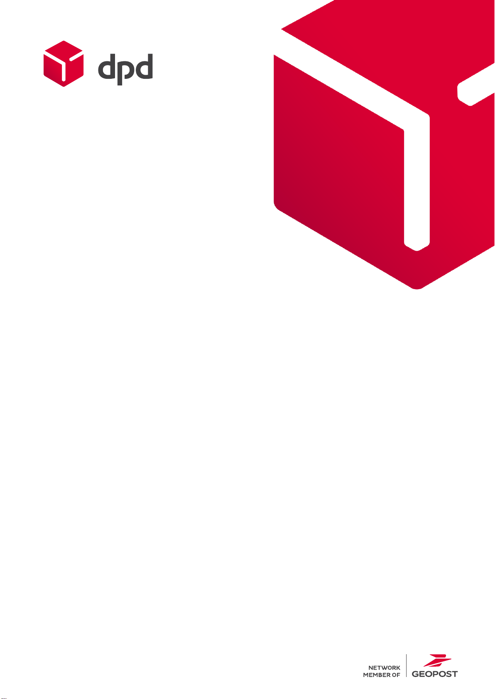

Všeobecné obchodní
podmínky
Platné od 1. 6. 2023
platné

Všeobecné obchodní podmínky
Vnitrostátní přeprava
Tyto Všeobecné obchodní podmínky (dále jen
„Podmínky“) upravují právní vztahy mezi Zasílatelem a
Příkazcem. Tyto Podmínky jsou součástí každé
zasílatelské nebo poštovní smlouvy, kterou Zasílatel
s Příkazcem uzavírá. Odchylky od těchto Podmínek lze
sjednat pouze písemně.
1. Základní pojmy
Zasílatel je společnost Direct Parcel Distribution CZ
s.r.o., IČ 61329266, se sídlem Říčany u Prahy, Modletice
135, PSČ 25101, zapsaná v obchodním rejstříku
vedeném Městským soudem v Praze, oddíl C, vložka
52346, dále jen „Zasílatel“ nebo „DPD“.
Dopravce (případně také Doručovatel) je subjekt odlišný
od Zasílatele, jímž Zasílatel realizuje vyzvednutí, dopravu
a doručení Zásilek.
Pickup je místo, kde je zajištěn příjem a/nebo výdej
Zásilek.
Příkazce je subjekt, který uzavřel se Zasílatelem
zasílatelskou smlouvu, případně jinou smlouvu
související s přepravou Zásilek.
Příjemce je subjekt, který je na Zásilce označen jako
„Příjemce“, či jiný subjekt oprávněný Zásilku převzít.
Zásilka je věc určená k přepravě, jejíž parametry jsou
blíže definovány v dokumentu Hlavní a doplňkové služby,
který je dostupný na webových stránkách.
Zásilka na dobírku je Zásilka, u které je Zasílatel povinen
na základě instrukcí od Příkazce vybrat/zajistit vybrání
příslušného finančního obnosu od Příjemce Zásilky, který
je poté v souladu s těmito Podmínkami poukázán
bezhotovostně na účet specifikovaný Příkazcem.
Smlouva je smlouva související s obstaráním přepravy
věci uzavřená mezi Zasílatelem a Příkazcem písemnou
nebo jinou formou na základě ustanovení zákona
č. 89/2012 Sb., občanského zákoníku, v platném znění
(dále jen „Občanský zákoník“), nebo na základě
ustanovení zákona č. 29/2000 Sb., o poštovních
službách, v platném znění, pokud je služba uzavírána
v režimu poštovních služeb.
Rámcová zasílatelská smlouva je písemné ujednání
mezi Zasílatelem a Příkazcem, kterým mohou být
stanoveny podmínky pro uzavírání jednotlivých smluv,
včetně odchylek od těchto Podmínek.
Registrační formulář je dokument, jímž Zasílatel a
Příkazce potvrzují skutečnosti podstatné pro opakované
uzavírání smluv, jestliže není uzavřena Rámcová
zasílatelská smlouva.
Služby jsou definovány v článku 2. těchto Podmínek.
Místo doručení je adresa Příjemce uvedená na
přepravním štítku, případně jiná adresa, na kterou má být
Zásilka doručena.
Reklamační řád je součástí těchto Podmínek a upravuje
postup pro uplatnění a vyřízení reklamace při ztrátě nebo
poškození Zásilky.
Webové stránky Zasílatele jsou stránky na adrese
www.dpd.com/cz/cs/, popřípadě jiné webové stránky, o
nichž Zasílatel Příkazce informuje.
2. Služby
2.1 Činnost Zasílatele zahrnuje (dále společně jen jako
„Služby“):
a. Veškeré úkony spojené s obstaráváním přepravy Zásilky
z místa jejího převzetí do Místa doručení,
b. u Zásilek na dobírku – inkaso/zajištění inkasa dobírkové
částky od Příjemce Zásilky a převod této částky
bezhotovostně na účet označený Příkazcem,
c. zpětné zaslání nedoručitelných Zásilek Příkazci či
jakékoliv jiné osobě určené Příkazcem včetně Zásilek,
jejichž přijetí bylo Příjemcem odmítnuto.
2.2 Součástí Služeb mohou být i další Zasílatelem
poskytované služby (dále jen „Doplňkové služby“).
Služby a Doplňkové služby jsou blíže definovány
v dokumentu Hlavní a doplňkové služby, který je
dostupný na webových stránkách.
2.3 Zasílatel přijme k zajištění přepravy zboží/zásilky pouze v
souladu s těmito Podmínkami a vyhrazuje si právo
kdykoliv odmítnout obstarání přepravy Zásilek dle svého
uvážení.
3. Uzavření smlouvy
3.1 Smlouva může být uzavřena:
Písemně potvrzením objednávky obstarání přepravy,
ústně a/nebo konkludentně. Ústně nebo konkludentně
uzavřená smlouva je uzavřena v okamžiku, kdy dojde ze
strany Příkazce k předání Zásilky a jejímu převzetí
Zasílatelem. Dokladem prokazujícím převzetí Zásilky je
záznam vzniklý naskenováním přepravního štítku.
3.2 Zasílatel nepřihlíží k žádným návrhům, podmínkám a
požadavkům uvedeným v objednávce, které nejsou
v těchto Podmínkách uvedeny jako volitelné smluvní
podmínky.
4. Zásilky vyloučené z přepravy
4.1 Není-li v souladu s ustanovením bodu 4.2 se Zasílatelem
písemně ujednáno jinak, jsou z obstarání přepravy
vyloučeny níže uvedené Zásilky a komodity:
a. Zásilky, které nejsou označené řádně vyplněným štítkem,
nebo k nim nebyla Příkazcem včas předána přepravní
data v souladu s těmito Podmínkami či pokyny Zasílatele,
b. Zásilky, které obsahují zboží nedostatečně chráněné,
zabalené nebo zajištěné způsobem odpovídajícím jeho
tvaru, povaze, hmotnosti, nebo svými parametry
překračují limity stanovené těmito Podmínkami pro danou
přepravu / zásilku,
c. Zásilky balené v černé folii nebo jiném černém obalu,
zásilky bez pevného ochranného obalu, zásilky, které
nemají kompaktní tvar kvádru, krychle nebo
vícehranného tubusu, příp. obálky,
d. samostatně zabalené kusy, které jsou následně svázané
či jinak spojené dohromady, a jsou označené pouze
jedním štítkem,
e. hořlaviny, chemikálie, kyselinotvorné, žíravé a dráždivé
látky, lékařský odpad, lékařská zařízení a nástroje,
nebezpečné zboží podléhající některé z úmluv o
přepravě nebezpečného zboží (ADR, IATA DGR apod.),
f. střelné zbraně, napodobeniny střelných zbraní, ostatní
zbraně, munice, výbušniny, ohňostroje a pyrotechnika,
g. léky, drogy, omamné a psychotropní látky a jedy,
h. nádoby pod tlakem, hasicí přístroje apod.,
i. umělecká díla, šperky (včetně hodinek), cenné kovy
(včetně zlatých a stříbrných předmětů), drahé kameny,
pravé perly, starožitnosti, koberce, kožichy a další
cennosti,
j. sklo a jiné zboží (nebo jeho části) vyrobené ze skla,
porcelánu či litiny, kameninové výrobky a jiné výrobky z
obdobných materiálů,
k. hotovost, mince, sběratelské mince a známky, platební
karty, dokumenty, které lze směnit za hotovost nebo zboží
(například směnky, šeky, poukázky s nominální
hodnotou, dobropisy, dluhopisy, listinné akcie, bankovky

Všeobecné obchodní podmínky
Vnitrostátní přeprava
a cenné papíry, za které lze získat hotovost, sázenky,
vstupenky ad.), osobní doklady,
l. živý organismus či materiál (například zvířata, rostliny,
stromy a semena), lidské či zvířecí orgány a ostatky,
m. zmrazené či rychle se kazící potraviny, nebo jakékoliv
zboží vyžadující při přepravě řízený teplotní nebo
vlhkostní režim,
n. předměty a látky, které s ohledem na svůj charakter
vyžadují speciální úpravu vozidla nebo vytvoření
speciálních podmínek při přepravě podle platných
předpisů nebo konkrétních okolností,
o. předměty a látky lehce poškoditelné i za předpokladu
dodržování pokynů pro zvláštní manipulaci se Zásilkou,
jako jsou například: led, alkohol, jakékoliv tekutiny
v jakýchkoliv obalech, zejména ve skleněných nebo
obdobných křehkých obalech, a předměty obdobné
povahy, a dále např. tekuté barvy a lepidla v jakémkoliv
obalu,
p. Zásilky podléhající zákazu dovozu nebo vývozu, nebo
obchodním omezením či embargům OSN, EU (ev.
členských států EU) a členských států NATO, Austrálie a
Japonska, a jakékoliv zboží, které je zákonem či jiným
platným právním předpisem pro obchod či přepravu
zakázáno,
q. Zásilky a zboží, jejichž přeprava vyžaduje speciální
povolení či licenci,
r. Zásilky, jejichž povaha, obsah, vnější vzhled, vlastnosti,
způsob zaslání či jejichž držení je protiprávní či zakázané,
zejména s ohledem na bezpečnost, veřejný pořádek a
práva třetích osob (vč. práv duševního vlastnictví),
s. Zásilky, na kterých není uvedena adresa dodání, nebo je
jako dodací adresa uveden P. O. BOX,
t. Zásilky obsahující zboží v hodnotě vyšší než 13.000 EUR,
u. televizory nebo monitory s úhlopříčkou větší než 42“ nebo
prohnuté televizory,
v. nové i použité akumulátory či jakékoliv jiné baterie
obsahující žíravé látky.
4.2 Přeprava jakékoliv Zásilky uvedené v bodu 4.1 výše není
možná bez předchozího písemného schválení Zasílatele,
takto schválené Zásilky nejsou považovány za vyloučené
z přepravy.
4.3 V závislosti na poskytované službě může Zasílatel rozšířit
definici zásilky vyloučené z přepravy. Zasílatel není
povinen při převzetí Zásilky zkoumat, zda Zásilka není
z přepravy vyloučena a převzetí Zásilky k přepravě tak
nelze považovat za potvrzení, že Zásilka není z přepravy
vyloučena.
4.4 V případě zásilek vyloučených z přepravy je Zasílatel
oprávněn:
a. odmítnout převzetí Zásilky k přepravě a požadovat po
Příkazci náklady na obstarání marné přepravy,
b. Zásilku vrátit Příkazci, případně uskladnit
k vyzvednutí Příkazcem nebo správními orgány, na
náklady Příkazce,
c. Zásilku doručit bez vyrozumění Příkazce a následně
na Příkazci požadovat příslušný příplatek dle Ceníku
příplatků, nebo úhradu svých zvýšených nákladů,
d. Zásilku na náklady Příkazce zlikvidovat, jestliže je
takový postup v souladu s právními předpisy, nebo jej
vyžaduje charakter zásilky a odvrácení hrozící škody
či ohrožení,
e. požadovat po Příkazci náhradu škody vzniklé na
jiných Zásilkách, majetku Zasílatele nebo jiných osob,
v příčinné souvislosti s vyloučenou Zásilkou, případně
nesprávných údajů poskytnutých Příkazcem.
4.5 Příkazce je povinen zajistit dodržování těchto Podmínek
i v případě, že Zásilky k obstarání přepravy budou v jeho
zastoupení předávat třetí osoby. V takovém případě
Příkazce odpovídá stejně, jako by Zásilku k obstarání
přepravy předával sám.
4.6 Za účelem zjištění, zda se jedná o Zásilku, která je
vyloučena z přepravy, je Zasílatel oprávněn kdykoliv
Zásilku včetně jejího obsahu zkontrolovat.
5. Otevření, prodej a zničení Zásilky
Zasílatel je oprávněn (nikoliv povinen) otevřít Zásilku,
jestliže:
a. ji nelze dodat a současně ji nelze vrátit nebo nemá
být podle Zasílatelské smlouvy vrácena,
b. je důvodné podezření, že obsahuje věc vyloučenou
z přepravy, přičemž Zasílatel k jejímu podání
neposkytl Příkazci písemný souhlas,
c. byla poškozena, nebo je důvodná obava, že by
před doručením zásilky mohlo k poškození dojít,
d. je to nezbytné k dodržení povinností uložených
Zasílateli právním předpisem.
Obsah Zásilky smí být při jejím otevření prohlížen jen v
rozsahu nezbytném pro zajištění účelu otevření.
Opětovné uzavření zásilky Zasílatel provede výhradně
vlastní specifickou páskou se svým logem. Při otevření
Zásilky postupuje Zasílatel tak, aby byla zajištěna
ochrana obsahu Zásilky, skutečností chráněných
právními předpisy a oprávněných zájmů Zasílatele i
Příkazce. Za otevření Zásilky se nepovažuje pouhá vnější
oprava jejího obalu.
Není-li možné zásilku dodat a současně ji nelze vrátit,
nebo nemá být dle pokynů Příkazce vrácena, je Zasílatel
po uplynutí 3 měsíců od převzetí zásilky oprávněn zásilku
zlikvidovat nebo ji prodat. Je-li to možné, výtěžek
z prodeje po odečtení nákladů na uskladnění a prodej
(dále jen „čistý výtěžek“) vydá Zasílatel Příkazci. Příkazce
má právo požádat o vydání čistého výtěžku ve lhůtě
jednoho roku ode dne převzetí Zásilky k přepravě. Po
marném uplynutí takové lhůty právo na vydání čistého
výtěžku zaniká a čistý výtěžek připadne Zasílateli.
6. Označení Zásilek a data k Zásilkám
6.1 Příkazce (či jím určený subjekt) je povinen opatřit Zásilky
předané Zasílateli k obstarání přepravy na straně
s největší plochou přepravním štítkem, generovaným
z aplikace nebo softwaru spravovaného Zasílatelem, ev.
poskytnutým Zasílatelem v tištěné formě, nebo
generovaným vlastním softwarem Příkazce, schváleným
pro tyto účely Zasílatelem.
Jestliže Příkazce využívá pro tisk štítků vlastní software,
je povinen podle pokynů Zasílatele aktualizovat
směrovací databázi RoutenTAB, aby bylo zajištěno
správné směrování zásilek dle PSČ. Současně je
Příkazce povinen dodat Zasílateli elektronicky kompletní
data k Zásilce, nejpozději do okamžiku, kdy je Zásilka
předána k přepravě dle těchto Podmínek, nebo
bezprostředně po takovém předání, a to prostřednictvím
aplikací Zasílatele, nebo vlastní aplikace, jestliže její
užívání bylo Zasílatelem schváleno. V opačném případě
si Zasílatel vyhrazuje právo neposkytnout Služby v plném
rozsahu nebo nedodržet dohodnutý termín doručení.
Příkazce je povinen využívat pro tisk štítků pouze
Zasílatelem přidělené číselné řady, přičemž je povinen
zajistit, že nebude na dvě různé Zásilky použit štítek se
shodným číslem.
Zasílatel nenese odpovědnost za jakékoliv škody vzniklé
Příkazci nedodržením kteréhokoliv ustanovení bodu 6.1
Všeobecné obchodní podmínky
Vnitrostátní přeprava
těchto Podmínek. Tím není dotčeno právo Zasílatele
žádat také úhradu nákladů či škod vzniklých v souvislosti
s porušením tohoto bodu.
6.2 Příkazce je povinen uvádět na přepravním štítku údaje
nezbytné pro řádné plnění Smlouvy, zejména:
• Jméno a příjmení či název Příjemce.
• Telefonní číslo s předvolbou pro ČR (+420) a e-mailovou
adresu Příjemce.
• Místo doručení, včetně PSČ a státu.
• Jméno fyzické osoby oprávněné Zásilku na straně
Příjemce převzít.
• Skutečnou hmotnost Zásilky v kg.
• Výši dobírky, pokud je vyžadován tento způsob platby a
jedná se o přepravní štítek určený pro Zásilky na dobírku
dle ustanovení těchto Podmínek.
Údaje uvedené na přepravním štítku musí být úplné,
čitelné, srozumitelné a správné.
6.3 Příkazce je povinen zajistit, že Zásilka je označena pouze
jedním přepravním štítkem. Zároveň je povinen odstranit
ze Zásilky všechna zavádějící sdělení či označení, která
nemají souvislost s právě zahájenou přepravou. Zásilku,
která nesplňuje povinnosti stanovené tímto bodem, je
Zasílatel oprávněn nedoručovat a vrátit zpět Příkazci.
Příkazce zároveň odpovídá za případné škody
způsobené Zasílateli tím, že mu předá k obstarání
přepravy Zásilku, která nesplňuje požadavky stanovené
tímto bodem.
6.4 V případě využití produktu Zabezpečené předání je
Příkazce povinen dodat Zasílateli k Zásilce čtyřmístný
kód, jakožto součást datové věty, po jehož zadání
Příjemcem do skenovacího zařízení bude Zásilka
předána Příjemci.
6.5 Příkazce je v případě, že podal k přepravě Zásilku, která
vyžaduje zvýšenou pozornost Zasílatele při ruční
manipulaci, povinen označit Zásilku originálními
doplňkovými štítky „Křehké“ nebo „Neklopit“ poskytnutými
Zasílatelem. Podrobné instrukce jsou k nalezení na
webových stránkách Zasílatele, v dokumentu „Jak
správně zabalit zásilky". V dopravních prostředcích a na
manipulačních technologiích jsou však Zásilky
Zasílatelem přepravovány v nejstabilnější poloze, bez
ohledu na doplňkové štítky.
7. Převzetí zásilky k obstarání přepravy
7.1 Není-li mezi Zasílatelem a Příkazcem dohodnuto jinak,
např. zajištění vyzvednutí Zásilky na místě určeném
Příkazcem (svoz), odevzdá Příkazce Zásilku určenou
k obstarání přepravy Zasílateli na příslušném depu
Zasílatele, a pokud to daná služba umožňuje, tak i na
výdejním místě Pickup.
7.2 Vyzvednutí zásilky je realizováno dle podmínek
sjednaných v:
• Objednávce,
• Rámcové zasílatelské smlouvě, nebo
• Registračním formuláři.
7.3 Příkazce je povinen poskytnout Zasílateli správné, úplné
a srozumitelné údaje o hmotnosti a rozměrech Zásilky a
dále o obsahu Zásilky a její povaze.
7.4 Příkazce je povinen Zásilku řádně zabalit tak, aby obal
umožňoval bezpečnou manipulaci se Zásilkou jedné
osobě a přepravu na válečkové dráze, a zabezpečit ji pro
účely systémové silniční přepravy tak, aby bylo možné s
ní nakládat běžným způsobem bez rizika poškození,
zejména je povinen vybavit Zásilku obalem, který odolá
běžnému působení okolních vlivů při systémové silniční
přepravě, a to jak vně obalu, tak uvnitř obalu, kde je
uložena Zásilka. Příkazce je povinen dodržet pokyny
Zasílatele týkající se zabalení Zásilky, které jsou přesně
specifikovány na webových stránkách v dokumentu „Jak
správně zabalit zásilky".
7.5 Příkazce, který posílá pneumatiky v rámci České
republiky je povinen je řádně zabalit maximálně po dvou
kusech do velikosti 18“ včetně a váhy max. 31,5 kg, nad
tuto velikost/váhu je Příkazce povinen zabalit pneumatiky
po jednom kuse. Příkazce, který posílá pneumatiky
včetně ráfku, je povinen je řádně zabalit vždy po jednom
kuse bez ohledu na velikost pneumatiky.
Pneumatiky nelze doručovat na výdejní místo Pickup.
Příkazce je povinen dodržet pokyny týkající se zabalení
Zásilky obsahující pneumatiky, které jsou přesně
specifikovány na webových stránkách, v dokumentu „Jak
správně zabalit zásilky".
7.6 Je-li mezi Zasílatelem a Příkazcem uzavřena dohoda o
vyzvednutí Zásilky ve smyslu odstavce 7.1 výše a
v okamžiku vyzvednutí Zásilky Dopravcem (v den svozu)
Příkazce Dopravci Zásilku nepředá, případně takový svoz
nezruší prostřednictvím adresy stornosvozu@dpd.cz, pak
je Zasílatel oprávněn za uskutečnění takového marného
pokusu o vyzvednutí Zásilky (marný svoz) požadovat po
Příkazci úhradu příplatku ve výši dle Ceníku příplatků
s tím, že tímto není omezen případný nárok Zasílatele na
náhradu škody.
8. Doručení zásilky
8.1 Zasílatel obstará doručení Zásilky na adresu Místa
doručení, a to k prvním uzamykatelným dveřím, jestliže
nebyla sjednána doplňková služba Doručení do oddělení.
Případná změna Místa doručení po převzetí Zásilky
Zasílatelem je možná za podmínek stanovených v tomto
článku.
8.2 Doba přepravy a čas doručení uváděné Zasílatelem jsou
pouze informativní a orientační. Zasílatel neodpovídá za
případné škody vzniklé Příkazci z důvodu nedodržení
orientačních časů.
Do uváděných přepravních časů Zasílatele se nepočítá:
a. Den převzetí Zásilky Zasílatelem,
b. prodlení způsobené vyšší mocí nebo okolnostmi
vyplývajícími z provozu a okolnostmi, které nemohl
Zasílatel odvrátit nebo předvídat,
c. doba potřebná pro celní kontroly, kontroly příslušných
státních orgánů, bezpečnostní kontrolu, opravu chybných
celních dokumentů apod.
8.3 Zásilka je doručena předáním Příjemci či třetí osobě,
která vystupuje jako osoba jednající za Příjemce v Místě
doručení. V případě důvodných pochybností je Dopravce
oprávněn vyžádat od takové osoby prokázání její
totožnosti a oprávnění jednat za Příjemce. Zasílatel
nenese žádnou odpovědnost za prodlení a škodu
vzniklou odmítnutím splnění požadavku prokázání
totožnosti a oprávnění jednat za Příjemce ze strany
takové osoby. Pokud u Dopravce nevzniknou důvodné
pochybnosti o oprávnění takové osoby jednat za
Příjemce, je oprávněn takové osobě v Místě doručení
Zásilku předat. V případech, kde to nastavení služby
umožňuje, může být identifikace přebírající osoby
provedena prostřednictvím ověření bezpečnostního kódu
(PIN).
8.4 Zásilka bude předána Příjemci při splnění následujících
podmínek:
Všeobecné obchodní podmínky
Vnitrostátní přeprava
a. osoba vystupující za Příjemce potvrdí převzetí Zásilky
svým podpisem do přenosného elektronického
skenovacího zařízení, případně svým podpisem na
dokument k tomuto účelu určený. Zasílatel nemusí podpis
vyžadovat, jestliže je Zásilka předána s ověřením
totožnosti prostřednictvím bezpečnostního kódu (PIN).
b. v případě doručení Zásilky na dobírku bude Zásilka
předána až po uhrazení příslušné dobírkové částky
vztahující se k dané Zásilce, případně souboru Zásilek a
po splnění podmínky dle předchozího bodu. Úhrada
dobírkové částky může proběhnout v hotovosti nebo
prostřednictvím platební karty akceptované Zasílatelem.
V případě úhrady dobírkové částky platební kartou je
Zasílatel oprávněn účtovat Příkazci příplatek dle platného
ceníku Zasílatelských služeb, a to i v případě, že si
Příkazce tuto službu výslovně neobjednal. Úhrada
dobírkové částky v hotovosti je možná jen do výše
50.000 Kč. V případě, že dobírková částka je vyšší než
50.000 Kč, musí být dobírková částka uhrazena platební
kartou.
c. v případě služby, která má charakter výměnné zásilky, je
podmínkou předání Zásilky Příjemci vzájemné předání
jiné Zásilky určené k výměně ze strany Příjemce do rukou
Dopravce.
d. při osobním odběru Zásilky Příjemcem, případně
Příkazcem, ve výdejním místě Pickup, je Zasílatel
oprávněn vyžádat prokázání totožnosti osoby, která
zásilku přebírá, k ujištění, že se jedná o osobu
oprávněnou k převzetí zásilky.
V případech, kde to nastavení služby umožňuje, může být
identifikace přebírající osoby provedena prostřednictvím
ověření bezpečnostního kódu (PIN).
8.5 Není-li Zásilka na první pokus doručena, včetně případů
odmítnutí prokázání oprávnění ze strany osoby
vystupující za Příjemce, obstará Zasílatel uskutečnění
druhého pokusu o doručení následující pracovní den. O
této skutečnosti je Příjemce informován prostřednictvím
e-mailu. Pokud je i druhý pokus neúspěšný, má Příjemce
možnost se do 7 kalendářních dnů ode dne druhého
pokusu o doručení dohodnout se Zasílatelem o zajištění
předání Zásilky, přičemž dohodnutý termín takového
doručení může spadat i do doby po uplynutí uvedené 7-
denní lhůty (v případě Zásilky na dobírku, u níž došlo
k prodloužení doby uložení na žádost Příjemce, má
Příkazce právo na vrácení Zásilky po uplynutí původní
doby (bez ohledu na takové prodloužení) a v takovém
případě bude Zásilka vrácena Příkazci a Příjemce bude
informován o takovém postupu). Pokud bude i třetí pokus
o doručení Zásilky neúspěšný, Zásilka bude následující
pracovní den vrácena Příkazci. Tím však není dotčen
nárok Zasílatele na úhradu Služeb.
8.6 Zasílatel si vyhrazuje právo, bez ohledu na ustanovení
bodu 8.5, alternativně doručit Zásilku do nejbližšího
výdejního místa původnímu Místu doručení, kde bude mít
Příjemce možnost si Zásilku vyzvednout. O takovém
alternativním doručení a podmínkách pro vyzvednutí
Zásilky je Zasílatel povinen Příjemce zásilky informovat.
8.7 Bez ohledu na ustanovení odstavce 8.5, Příjemce Zásilky
má právo změnit instrukce pro doručení Zásilky i před
prvním pokusem o doručení, a to prostřednictvím webové
aplikace Zasílatele. Změnu instrukcí pro doručení Zásilky
prostřednictvím zákaznické linky Zasílatele (pouze
neplacené služby) je možné provést v rámci její provozní
doby.
8.8 Nezaplatí-li Příjemce doběrečné ani při druhém pokusu o
doručení, Zásilka bude vrácena zpět Příkazci. Tím však
není dotčen nárok Zasílatele na úhradu Služeb.
8.9 Pokud Příjemce Zásilky odmítne Zásilku převzít, nejsou
prováděny další pokusy o doručení a Zásilka je vrácena
zpět Příkazci. Tím však není dotčen nárok Zasílatele na
úhradu Služeb.
8.10 V případě, že Zásilku nelze doručit, nebo pokud Příjemce
odmítne Zásilku převzít, je Příkazce povinen Zasílateli
uhradit veškeré poplatky související s vrácením Zásilky
Příkazci, a to včetně poplatku za Dobírku (dle platného
aktuálního ceníku), společně s poplatky účtovanými
Zasílatelem Příkazci za doručení Zásilky Příjemci.
8.11 Dopravce není povinen účastnit se kontroly obsahu
doručené Zásilky.
9. Cena Služeb a její splatnost
9.1 Příkazce se zavazuje zaplatit Zasílateli za poskytnutí
Služeb a Doplňkových služeb odměnu. Výše odměny za
Služby a Doplňkové služby (cena), je stanovena
aktuálními ceníky, není-li sjednána jiná výše odměny,
přičemž pro určení aktuální výše cen při změnách
v cenících je rozhodný den, kdy byla uzavřena konkrétní
smlouva.
9.2 K ceně za obstarání přepravy bude Zasílatel dále Příkazci
účtovat zejména následující položky, pokud mu na ně na
základě těchto Podmínek vznikne nárok:
a. doběrečné,
b. poplatek za rozšířené krytí,
c. další příplatky za Doplňkové služby,
d. náklady na obstarání marné přepravy (včetně marného
svozu),
e. cenu nadstandardních či příplatkových úkonů, které bylo
nezbytné provést z důvodů spočívajících na straně
Příkazce a které jsou uvedeny v platném Ceníku příplatků
zveřejněném na webových stránkách Zasílatele. Změny
Ceníku příplatků oznamuje Zasílatel zveřejněním na
svých webových stránkách nejméně 10 dní před platností
takové změny.
9.3 Pokud není smluveno jinak, účtuje Zasílatel Příkazci ke
každé Zásilce energetický příplatek a mýtné, jejichž
aktuální výše a způsob výpočtu je uvedena na webových
stránkách Zasílatele.
9.4 Nárok Zasílatele na uhrazení ceny za Služby vzniká
předáním Zásilky Příjemci.
9.5 Zasílatel je oprávněn k jednostranné změně cen
v cenících, a to v případech odůvodněných změnou jeho
provozních, režijních a jiných nákladů. V případě změny
cen v cenících je Zasílatel povinen tuto změnu oznámit
Příkazci zpravidla alespoň 10 kalendářních dnů před
vstoupením této změny v platnost. Změny cen je Zasílatel
povinen oznámit zveřejněním příslušné změny na
webových stránkách, či zasláním na e-mailovou adresu
Příkazce, která je Zasílateli známa.
9.6 Zasílatel je oprávněn upravit údaj o hmotnosti Zásilky
uvedený Příkazcem na přepravním štítku v případě, že
automatická váha Zasílatele zaznamená rozdíl mezi
údajem uvedeným na přepravním štítku a skutečnou
hmotností Zásilky. V takovém případě je pro účely
výpočtu úhrady ceny rozhodující údaj zjištěný
Zasílatelem. V případě, že Příkazce uhradil obstarání
přepravy v hotovosti při předání Zásilky Zasílateli a uvedl
v objednávce přepravy, respektive na přepravním štítku,
nižší hmotnost Zásilky, než jakou zjistí Zasílatel při
převážení na automatické váze, je Zasílatel oprávněn

Všeobecné obchodní podmínky
Vnitrostátní přeprava
vyfakturovat Příkazci rozdíl v ceně za obstarání přepravy
podle základního ceníku Zasílatele pro příslušný produkt.
9.7 Zasílatel je oprávněn upravit údaj o hmotnosti Zásilky
uvedený Příkazcem na přepravním štítku v případě, že při
měření rozměrů Zásilky dojde přepočtem volumetrické
hmotnosti k výsledné volumetrické hmotnosti, která
překračuje skutečnou hmotnost Zásilky. Koeficienty pro
přepočet volumetrické hmotnosti jsou uvedeny
v dokumentu Hlavní a doplňkové služby. V takovém
případě je pro účely výpočtu úhrady ceny za obstarání
přepravy rozhodující údaj zjištěný Zasílatelem. V případě,
že skutečná hmotnost Zásilky zjištěná na depu Zasílatele
je vyšší než 50 kg, je Zasílatel oprávněn vrátit Zásilku
Příkazci a Příkazce je v takovém případě povinen uhradit
Zasílateli náklady spojené s vrácením takové Zásilky.
9.8 V případě, že Zásilky doručované prostřednictvím
garantovaných služeb nejsou doručeny v příslušné
časové lhůtě, Zasílatel Příkazci dobropisuje rozdíl mezi
cenou příslušné služby zvolenou Příkazcem a cenou za
základní služby dle platného ceníku přiděleného Příkazci.
Tato garance neplatí v případě, že k nedodržení
doručovacího času došlo chybou Příkazce, nepřevzetím
Zásilky Příjemcem, nebo v důsledku dalších okolností
vylučujících odpovědnost Zasílatele.
9.9 Cena za služby Zasílatele je splatná Příkazcem v
hotovosti nebo platební kartou při předání Zásilky
Zasílateli, nebylo-li mezi smluvními stranami dohodnuto
jinak.
Příkazce souhlasí s možností elektronické fakturace s
tím, že elektronická faktura bude zasílaná na e-mailovou
adresu, kterou Příkazce Zasílateli předem písemně sdělí.
V případě, že Příkazce nedá souhlas s možností
elektronické fakturace, je Zasílatel oprávněn účtovat
příplatek za vystavení faktury v listinné podobě ve výši dle
Ceníku příplatků. Příkazce se zavazuje zaplatit Zasílateli
smluvní pokutu ve výši 0,05 % z dlužné částky za každý
den prodlení s úhradou ceny. V případě, že se Příkazce
dostane do prodlení s úhradou ceny za jakékoliv služby
Zasílatele, je Zasílatel oprávněn požadovat od Příkazce
úhradu služeb v hotovosti při svozu Zásilky, i pokud bylo
do té doby sjednáno jinak, Příkazce je povinen předat
Zasílateli zpět všechny přidělené přepravní štítky a
Zasílatel je oprávněn zablokovat číselnou řadu přidělenou
Příkazci pro tisk přepravních štítků.
Pokud je Příkazce povinen platit za Služby dle tohoto
ustanovení v hotovosti, není možné provádět pravidelné
svozy, a Příkazce musí předat Zasílateli objednávku na
svoz zásilek dle příslušných ustanovení těchto Podmínek.
Zasílatel má k zajištění svých nároků vůči Příkazci
zástavní právo k Zásilce ve smyslu § 2481 Občanského
zákoníku a v případě nezaplacení ceny za Služby má
Zasílatel právo na uspokojení své pohledávky z výtěžku
zpeněžené zástavy. Zasílatel je oprávněn v souladu s
ustanovením § 1982 a násl. Občanského zákoníku
jednostranně započíst na své splatné pohledávky za
Příkazcem, s jejichž placením se Příkazce dostal do
prodlení, veškeré dobírkové částky vybrané při doručení
dobírkových Zásilek od Příjemců. Zasílatel je také
oprávněn jednostranně započíst veškeré své závazky s
pohledávkami Příkazce, se kterými je tento v prodlení.
O provedení zápočtu je Zasílatel povinen Příkazce
písemně vyrozumět. Pro tyto účely se za písemné
vyrozumění považuje i vyrozumění zaslané elektronickou
poštou. Příkazce není oprávněn jednostranně započíst
jakékoliv své nároky vůči nárokům Zasílatele.
9.10 V případě, že má Příkazce pochybnosti o správnosti
vystavené faktury, je Příkazce oprávněn písemně
upozornit na tuto skutečnost Zasílatele s označením
konkrétních nesprávností, a to ve lhůtě do 30 dnů od
doručení faktury, a pokud tak Příkazce neučiní, má se za
to, že vyúčtování provedené fakturou je bezvadné
a Zasílateli vznikl nárok na zaplacení ceny za služby,
vyúčtované dotčenou fakturou. Bylo-li vyúčtování
dotčenou fakturou nesprávné, Zasílatel ve lhůtě 30 dnů
po doručení upozornění Příkazce o nesprávném
vyúčtování vyúčtuje cenu za Služby správně. Bylo-li
vyúčtování dotčenou fakturou správné, může Zasílatel
tuto skutečnost Příkazci sdělit ve stejné lhůtě.
9.11 Zasílatel provozuje průběžné poskytování služeb, které
se považuje za uskutečněné uplynutím období, ke kterým
se vyúčtování vztahuje s odkazem na článek 64 Směrnice
rady 2006/112/ES a uzavřeného smluvního vztahu mezi
Zasílatelem a Příkazcem. DUZP nastává v návaznosti na
fakturační cykly Zasílatele daného zúčtovacího období.
10. Odpovědnost Zasílatele a Příkazce za ztrátu a škodu
na Zásilce
10.1 Zasílatel odpovídá za skutečnou škodu vzniklou na
přepravované Zásilce maximálně však do výše 50.000
Kč, jestliže si Příkazce u Zasílatele nesjednal rozšířené
krytí. V takovém případě Zasílatel odpovídá až do
hodnoty sjednané mezi Příkazcem a Zasílatelem,
přičemž takové rozšířené krytí je Zasílatelem zpoplatněno
dle aktuálních ceníků.
10.2 Postup při uplatnění nároku na náhradu škody je upraven
Reklamačním řádem, který je součástí těchto Podmínek.
11. Ochrana osobních údajů
11.1 V rámci poskytování služeb v souladu s těmito
Podmínkami vystupuje Zasílatel jako správce osobních
údajů ve smyslu čl. 4. Nařízení Evropského parlamentu a
Rady (EU) 2016/679 o ochraně osobních údajů (dále jen
„GDPR“) Příkazců a Příjemců Zásilek, které jsou
nezbytné pro řádné plnění závazků plynoucích Zasílateli
z uzavřených smluv.
11.2 Osobními údaji jsou jakékoliv údaje o identifikované nebo
identifikovatelné fyzické osobě, konkrétně osobní údaje
nezbytné pro plnění Služeb, kterými jsou zejména: jméno,
příjmení, adresa, telefonní číslo a e-mail Příkazce či
Příjemce.
11.3 Poskytnutí osobních údajů nezbytných pro plnění Služeb
je dobrovolné, nicméně ze strany Zasílatele je jejich
poskytnutí podmínkou uzavření smluvního vztahu a
plnění závazků Zasílatele z tohoto smluvního vztahu.
11.4 Osobní údaje budou zpracovány Zasílatelem a/nebo třetí
stranou podílející se na poskytování Služeb, a to v
nezbytném rozsahu a pouze pro účely související
s plněním Služeb, zejména k:
• Řádnému provedení služeb, sledování zásilek,
oznámení o doručení Příjemci a úpravě podmínek pro
doručení Zásilky
• Provedení celních formalit a kontrol embarga
• Poskytnutí potvrzení o doručení
• Správě žádosti Příkazce o informace o stavu doručení
Zásilky
11.5 Příkazce je srozuměn s tím, že Zasílatel zpracovává
osobní údaje osob, které Příkazce zastupují i pro účely
nabídky služeb a sdělování informací souvisejících
s poskytováním služeb Zasílatele, jestliže s tím Příkazce
nevyslovil nesouhlas.
Všeobecné obchodní podmínky
Vnitrostátní přeprava
11.6 Zasílatel je oprávněn předávat mimo území EHP pouze ty
osobní údaje, které jsou nezbytné pro poskytování
Služeb.
11.7 Osobní údaje jsou uchovávány ve formě umožňující
identifikaci osob pouze po dobu nezbytně nutnou
k provedení Služeb a dále po dobu vyžadovanou
právními předpisy k uplatnění nebo obhajování právních
nároků. Po uplynutí této doby budou všechny osobní
údaje Zasílatelem zničeny.
11.8 Subjekt údajů má právo na přístup, opravu, omezení
zpracování, přenositelnost údajů, pokud je to technicky
proveditelné, právo vznést námitku a výmaz svých
osobních údajů zpracovávaných Zasílatelem.
11.9 Nevyhoví-li Zasílatel žádosti, má subjekt údajů právo
obrátit se na příslušný dozorový orgán (Úřad pro ochranu
osobních údajů).
11.10 Bezpečnost a důvěrnost osobních údajů
Zasílatel se zavazuje přijmout veškerá opatření nezbytná
k zachování integrity, dostupnosti a důvěrnosti osobních
údajů.
Zasílatel se zejména zavazuje zavést technické a
organizační opatření potřebná k zajištění odpovídající
úrovně bezpečnosti a důvěrnosti.
Zasílatel se zavazuje zejména:
• Učinit kroky nezbytné k ochraně osobních údajů před
náhodným nebo nezákonným zničením nebo náhodnou
ztrátou, změnou nebo neoprávněným přístupem
• Zpřístupnit osobní údaje pouze těm osobám, které jsou
k takovému zpracování oprávněny a pouze v takovém
rozsahu, který je nezbytný pro poskytování služeb.
11.11 Podrobné podmínky a zásady pro zpracování osobních
údajů Zasílatelem, jakož i detaily uplatnění práv subjektů
údajů, jsou k dispozici na webových stránkách, sekce
Ochrana osobních údajů.
11.12 Příkazce akceptací těchto Podmínek poskytuje Zasílateli
souhlas se zpracováním svých elektronických kontaktů,
které Zasílateli poskytl, ke zpracování za účelem zasílání
obchodních sdělení elektronickými prostředky ze strany
Zasílatele ve smyslu zákona č. 480/2004 Sb., o některých
službách informační společnosti. Takto poskytnutý
souhlas lze kdykoliv odvolat.
12. Závěrečná ustanovení
12.1 Právní vztahy mezi Zasílatelem a Příkazcem neupravené
Rámcovou zasílatelskou smlouvou nebo těmito
Podmínkami se řídí právním řádem České republiky, tj.
především příslušnými ustanoveními Občanského
zákoníku a zákona o poštovních službách.
12.2 Příkazce není oprávněn poskytovat za úplatu služby
Zasílatele pod jinou obchodní značkou.
12.3 Zasílatel je oprávněn provést změnu Podmínek nebo
uvedených ceníků, v takovém případě je povinen
seznámit s ní Příkazce prostřednictvím zveřejnění na
webových stránkách, či zasláním na e-mailovou adresu
Příkazce, která je Zasílateli známá, a to s dostatečným
časovým předstihem (alespoň 30 dní) před datem
účinnosti takové změny. Příkazce je povinen dostatečně
často sledovat uvedené webové stránky a seznamovat se
s uvedenými změnami.
Všeobecné obchodní podmínky
Mezinárodní přeprava
1. Obecná ustanovení
1.1 Rozsah působnosti
Tyto Podmínky upravují smluvní vztahy mezi Příkazcem a
Zasílatelem a vztahují se na Služby označované jako
CLASSIC EUROPE a CLASSIC SHOP, které zahrnují
přeshraniční přepravu zásilek z území jedné z Vybraných
zemí na území jedné nebo více Zemí doručení uvedených
v příloze č. 1 těchto Podmínek.
Zasílatel si vyhrazuje právo jednostranně upravit nebo
rozšířit poskytované Služby nebo tyto Podmínky.
2. Definice a výklad
2.1 Základní pojmy
CLASSIC EUROPE je služba spočívající v obstarání
přepravy zásilky na určenou doručovací adresu, která se ve
vybraných zemích uvedených v závorce může nazývat také
tak, jak je uvedeno dále: DPD CLASSIC a DPD Private
(CZ), CLASSIC (ES), DPD CLASSIC (BE, HR, EE, DE, LT,
LV, LU, NL, PL, SK, CH, UK), DPD Classic Europe (HU,
FR), DPD Classic International (RO), DPD Classic –
Europe by Road (IE), Chrono Classic (FR), DPD
BUSINESS/DPD HOME (PT).
Pro účely těchto Podmínek se dále mohou namísto výrazu
„CLASSIC EUROPE“ používat také výrazy „DPD
CLASSIC“ a „DPD Private“, a to buď společně, nebo
samostatně.
CLASSIC SHOP je služba spočívající v obstarání přepravy
zásilky do výdejního místa Pickup, která se ve vybraných
zemí uvedených v závorce může nazývat také tak, jak je
uvedeno dále: Pickup (CZ) Chrono Relais Europe (FR),
2SHOP (ES, LU, BE, NL), Pickup Pakipood (EE), DPD
relais (FR), DPD Shop (CH), Parcelshop Delivery (DE),
Pickup Paku Bode (LV), Ship 2 Shop (UK) nebo Pickup
siuntų taųkas (LT). U zásilek z EU do UK a/nebo z UK do
EU, může být tato služba Zasílatelem kdykoliv
pozastavena, a to s předchozím oznámením, které činí
alespoň 5 kalendářních dní.
Pro účely těchto Podmínek se dále může namísto výrazu
CLASSIC SHOP používat také výraz Pickup.
Bezpečné místo (Safe place) pro služby CLASSIC
EUROPE znamená bezpečné místo na Doručovací adrese,
jak jej specifikují Podmínky doručení Zasílatele v zemi
doručení, dostupné na www.dpd.com.
Celní dluh je částka dovozního nebo vývozního cla a
všechny související dovozní daně vypočítané podle
platných celních a daňových právních předpisů.
CMR je Úmluva o přepravní smlouvě v mezinárodní silniční
nákladní dopravě.
Cut off Time je poslední možný termín, ve kterém může
být zásilka přijata na depu Zasílatele (potvrzen
naskenovaným záznamem), který je zohledněn při výpočtu
Doby doručení. Je-li to možné, je Příkazce informován o
tomto termínu společně s Dobou doručení.
Člen sítě DPD je společnost patřící do sítě DPD a její
příslušní zaměstnanci, zástupci a/nebo dodavatelé.
DAP (Delivery at Place), je podmínka Incoterm používána
pro přepravu, podle které je Příjemce odpovědný za
všechna cla a daně, které mají být Příjemci vráceny a
účtovány před doručením.
Doba doručení je orientační, nezávazný termín doručení
Zásilky vyjádřený počtem dní, které Zasílatel potřebuje na
přepravu Zásilky z původního PSČ do cílového PSČ, a
který je Příkazci zpřístupněn online.
Doručovací adresa je místo doručení určené Příkazcem
nebo Příjemcem.
EHP je Evropský hospodářský prostor a jeho členské státy.
Elektronické rozhraní je webová stránka, portál, brána,
prodejní místo, rozhraní pro programovou aplikaci (API),
ad.
ESCD je zařízení pro zachycení elektronického podpisu,
které je rovněž schopno přijímat, ukládat a přenášet
informace o Příkazci, včetně podpisu.
EU je Evropská unie a její členské státy.
Kód komodity je specifický kód produktu používaný ke
klasifikaci zboží obsaženého v Zásilce za účelem stanovení
dovozního nebo vývozního cla.
Nařízení o ochraně osobních údajů znamená Nařízení
(EU) 2016/679 o ochraně fyzických osob v souvislosti se
zpracováním osobních údajů a o volném pohybu těchto
osob.
Osobní údaj je jakýkoliv údaj o identifikované nebo
identifikovatelné fyzické osobě; identifikovatelnou
fyzickou osobou je osoba, kterou lze přímo nebo nepřímo
identifikovat, zejména pomocí jména, identifikačního
čísla, údaje o poloze, online identifikátoru a/nebo na
základě jednoho či více faktorů specifických pro fyzickou,
fyziologickou, genetickou, duševní, ekonomickou, kulturní
nebo sociální identitu dané fyzické osoby.
Pickup je výdejní místo, kam lze doručit Zásilku:
• pro služby CLASSIC EUROPE:
• výdejní místo zvolené Zasílatelem ze seznamu
výdejních míst v zemi doručení po prvním
neúspěšném pokusu o doručení,
• výdejní místo zvolené Příjemcem v průběhu
přepravy (Inflight option) ze seznamu v příslušné
zemi doručení.
• v případě služby CLASSIC SHOP výdejní místo
zvolené Příkazcem, případně Příjemcem, ze
seznamu výdejních míst v zemi doručení.
Podmínky jsou tyto Všeobecné obchodní podmínky
Zasílatele pro služby CLASSIC EUROPE a CLASSIC
SHOP pro Vybrané země, přičemž tento pojem zahrnuje
rovněž právní předpisy a dohody, na které je zde výslovně
odkazováno.
Podmínky doručení jsou konkrétní podmínky vztahující
se k Zásilce, které jsou specifikovány na stránkách
Zasílatele www.dpd.com, přičemž tyto mohou být
v jednotlivých Zemích doručení odlišné.
Predict je služba odesílání SMS, e-mailů, případně jiných
forem elektronické notifikace Příjemci, kterou Zasílatel
informuje o přepokládaném čase doručení.
Přepravní štítek je štítek a/nebo jiný dokument
připevněný k Zásilce, který slouží jako doklad o existenci
smlouvy mezi Zasílatelem a Příkazcem a o použití
Podmínek.
Příjemce nebo Adresát je subjekt, kterému je Zásilka
adresována a jehož jméno je uvedeno jako Příjemce na
Přepravním štítku. Pro účely těchto Podmínek je tato
osoba rovněž uváděna jako dovozce při celním odbavení.
Příkazce nebo Odesílatel je fyzická nebo právnická
osoba, která se Zasílatelem uzavírá smlouvu, přičemž
Zásilku může předat jakákoliv osoba zastupující Příkazce.
Přímé celní zastoupení znamená zastoupení, při kterém
Zasílatel jedná jménem a na účet Příkazce při plnění
celních formalit.
Síť DPD znamená jednu z těchto společností: DPDgroup
International Services GmbH & Co. KG, franšízy a
spolupracující partneři společnosti DPDgroup International

Všeobecné obchodní podmínky
Mezinárodní přeprava
Services GmbH & Co. KG, GeoPost SA, jejich dceřiné
společnosti a pobočky.
Služba je zajištění přeshraniční přepravy Zásilek pro
Příkazce, která se řídí těmito Podmínkami, včetně
souvisejících služeb.
Smlouva je smlouva uzavřená mezi Příkazcem a
Zasílatelem, jejíž součástí jsou tyto Podmínky a jejíž rozsah
se vztahuje také na případné další služby.
Soused je osoba, která žije nebo pracuje v přiměřené pěší
vzdálenosti od doručovací adresy Příjemce a kterou označil
Příkazce nebo Příjemce jako svého zmocněnce pro převzetí
zásilky.
Správce osobních údajů je fyzická nebo právnická osoba,
orgán veřejné moci nebo jiný subjekt, který sám nebo
společně o ostatními určuje účel a prostředky zpracování
osobních údajů.
Volumetrická hmotnost je prostor, který Zásilka zabírá
svým objemem, vypočítaný pomocí vzorce délka (cm) x
šířka (cm) x výška (cm) / 5000 (cm3/kg).
Záložní adresa je alternativní adresa označená Příjemcem
v rámci změny instrukce pro doručení, na které se nachází
osoba oprávněná k převzetí Zásilky za Příjemce.
Zasílatel je člen sítě DPD, který zajišťuje doručení ve
vybrané zemi a/nebo který má smluvní vztah s Příkazcem.
Zásilka je věc určená k přepravě s následujícími parametry:
• CLASSIC EUROPE
• hmotnost max. 31,5 kg, délka max. 175 cm,
maximální obvodová délka 300 cm (2x šířka + 2x
výška + 1x délka)
• CLASSIC SHOP
• hmotnost max. 20 kg délka max. 100 cm,
maximální obvodová délka 250 cm (2x šířka + 2x
výška + 1x délka)
Záznam skenování je laserový elektronický záznam kroků
v procesu přepravy Zásilky.
Země doručení jsou země, do kterých lze doručit Zásilku a
které jsou uvedeny v Podmínkách doručení dostupných na
webových stránkách Zasílatele.
Zletilost znamená věk, kdy osoba nabývá ze zákona plnou
svéprávnost, je-li to vyžadováno zákonem ve Vybrané zemi
a/nebo v Zemi doručení.
Změna instrukce pro doručení (Inflight option) je služba
umožňující Příjemci v souvislosti se službou Predict upravit
či zvolit jiné možnosti pro doručení Zásilky.
2.2 Pravidla výkladu
a. Pojem osoba zahrnuje fyzickou osobu, právnickou osobu
zapsanou do obchodního rejstříku, a pokud to není
zakázáno, také právnickou osobu nezapsanou do
obchodního rejstříku.
b. Odkaz na smluvní stranu zahrnuje rovněž její zástupce,
nástupce nebo schválené postupníky.
c. Odkaz na právní předpis nebo ustanovení zákona znamená
odkaz na takový právní předpis v jeho aktuálně platném
znění. Odkaz na právní předpis nebo ustanovení zákona
zahrnuje také jeho podřízenou legislativu.
d. Termíny „včetně, zejména, zahrnující“ nebo podobný výraz
se vykládají jako ilustrativní a neomezují smysl slov, která
těmto termínům předcházejí.
e. Odkaz na výraz „psaný“ nebo „písemný“ zahrnuje také faxy
a e-maily, není-li výslovně uvedeno jinak.
f. Pokud není uvedeno jinak, lhůty v těchto Podmínkách jsou
stanoveny v pracovních dnech, tj. dnech vyjma sobot,
nedělí a státem uznaných svátků v zemi odeslání,
tranzitních zemích a zemi doručení.
3. Základní ustanovení
3.1. Služby zahrnují veškeré úkony spojené s obstaráním
přepravy Zásilky z místa jejího převzetí na místo doručení
a služby související.
3.2. Zasílatel přijme k zajištění přepravy zboží/zásilky pouze v
souladu s těmito Podmínkami a vyhrazuje si právo
kdykoliv odmítnout obstarání přepravy Zásilek dle svého
uvážení.
3.3. Tyto Podmínky vylučují použití jakýchkoliv jiných
podmínek Příkazce, obchodních zvyklostí a/nebo praxe.
Příkazce prohlašuje, že provedením objednávky nebo
přijetím nabídky od Zasílatele na přepravu Zásilky se
seznámil se zněním Podmínek a že s nimi souhlasí.
Příkazce je současně povinen zajistit souhlas Příjemce s
těmito Podmínkami a takový souhlas na vyžádání
Zasílatele doložit.
3.4 Příkazce bere na vědomí, že se nespoléhá na žádné
prohlášení, slib ani vyjádření uvedené Zasílatelem nebo
jeho jménem, které není uvedeno ve Smlouvě. V případě
Zásilky doručované ze země nebo do země mimo EU
poskytne Příkazce Zasílateli v souvislosti s veškerým
zbožím následující dokumenty a informace:
• exportní fakturu v anglickém jazyce (včetně jasného
a jednoznačného popisu zboží),
• kód komodity každého zboží,
• písemné upozornění o Zásilce a/nebo zboží
obsaženém v Zásilce, které není určeno ke
standardnímu nebo trvalému vývozu (např. dočasný
vývoz zboží za účelem jeho opravy, které bude
vráceno do země odeslání),
• oprávnění k přímému zastoupení Příkazce, pokud to
vyžadují platné právní předpisy, a
• jakékoliv informace vyžadované příslušnými celními
orgány nebo Zasílatelem. Příkazce nese
odpovědnost za kontrolu a správnost takových
informací. Všechny celní dokumenty a Přepravní
štítek musí být Příkazcem správně vyplněny v
souladu se všemi platnými celními předpisy.
Příkazce bere na vědomí, že Zasílatel při výpočtu celního
dluhu vztahujícího se k Zásilce vychází z informací
poskytnutých Příkazcem dle tohoto bodu.
3.5 Příkazce bere na vědomí a potvrzuje následující:
a. Příkazce má výhradní oprávnění ke zboží se všemi
požitky, nebo je oprávněný uzavřít Smlouvu,
b. Příkazce nese odpovědnost za správnost všech informací
předaných Zasílateli,
c. pokud jsou údaje neúplné, nebo pokud je faktura neúplná
či nesprávná, Zásilka bude přijata k přepravě výhradně na
odpovědnost Příkazce,
d. pokud chybí Kód komodity, Zasílatel může (podle svého
uvážení):
i. použít všeobecný Kód komodity na základě popisu zboží
uvedeného Příkazcem, nebo
ii. zadržet zboží, dokud neobdrží potřebný Kód komodity od
Příkazce, případně je oprávněn vrátit zboží Příkazci.
4. Smluvní strany a uzavírání subdodavatelských smluv
4.1 Smlouvu uzavírají Zasílatel a Příkazce.
4.2 Podrobnosti o postupu při přepravě Zásilky lze najít na
webových stránkách Zasílatele.
4.3 Pokud Příkazce není vlastníkem zboží v Zásilce, zaručuje
tímto Zasílateli, že je zákonným a řádně zmocněným
zástupcem jeho vlastníka a že tímto přijímá tyto Podmínky
Všeobecné obchodní podmínky
Mezinárodní přeprava
za sebe i jménem ostatních osob, které mají k Zásilce
vlastnický podíl.
4.4 Zasílatel je oprávněn využít pro účely plnění Smlouvy
přepravce (subdodavatele, zástupce a členy sítě) a takový
přepravce je dále oprávněn využít další subdodavatele za
stejných podmínek.
5. Zásilky
5.1 Maximální rozměry
Příkazce je povinen zajistit, aby každá Zásilka splňovala
kritéria hmotnosti, rozměrů a délky, v souladu s definicí
příslušné Zásilky dle těchto Podmínek.
Odpovědnost za řádné zabalení Zásilky, její označení a
související dokumentaci nese výlučně Příkazce.
Příkazce se zavazuje a zaručuje, že:
a. Zásilka byla řádně a dostatečně zabalena a označena v
souladu s požadavky a omezeními uvedenými v těchto
Podmínkách tak, aby obal umožňoval bezpečnou
manipulaci a odolal běžnému působení okolních vlivů při
přepravě, a zabezpečit ji pro účely přepravy, aby bylo
možné s ní nakládat běžným způsobem bez rizika
poškození, aby při přepravě nedošlo ke ztrátě nebo
poškození Zásilky a aby Zásilka nezpůsobila zranění či
škodu Zasílateli, škodu na majetku či na jiném zboží.
Příkazce bere na vědomí, že přeprava vyžaduje takový
obal, který bude chránit zboží při silniční a/nebo letecké
přepravě proti zátěži způsobené automatickým třídicím
zařízením a mechanickým zpracováním (pád z výšky 80 cm
na hranu, roh nebo stranu) i proti různým klimatickým
a/nebo atmosférickým tlakovým podmínkám, přičemž obal
nesmí umožnit přístup k obsahu bez zanechání stopy,
b. Příkazce zkontroloval, že komerční/prodejní obal splňuje
tyto požadavky a že obal ani Zásilka nejsou poškozené,
nevykazují viditelné známky poškození, prosakování ani
nevydávají zápach. Slova vytištěná na obalu, jako „Fragile“
(Křehké) nebo „top/bottom“ (horní/spodní strana), nemusí
být Zasílatelem zohledňována a nezbavují Příkazce jeho
povinností,
c. označení Zásilky obsahuje:
• v případě služby DPD CLASSIC a DPD Private celé
jméno, adresu, PSČ a zemi Příjemce a Odesílatele,
telefonní číslo a/nebo e-mailovou adresu Příjemce,
• v případě služby Pickup celé jméno, adresu, PSČ a
zemi doručení Příjemce, Odesílatele a výdejního místa
Pickup, telefonní číslo a/nebo e-mailovou adresu
Příjemce,
a je provedeno čitelným a odolným způsobem. Každá
Zásilka musí být označena přepravním štítkem Zasílatele,
d. řádně vyplnil Přepravní štítek,
e. v případě přepravy Zásilek do země mimo EU zkontroloval
všechny příslušné celní přepisy a plní jejich ustanovení a
poskytl Zasílateli všechny potřebné celní dokumenty a
informace. Všechny takové celní dokumenty musí být
připevněny k vnějšímu obalu Zásilky,
f. zboží obsažené v Zásilce nepodléhá žádné licenci,
povolení, certifikátu, omezení, embargu ani
antidumpingovému zákonu,
g. Příkazce poskytl Zasílateli všechny potřebné a nutné
informace o obsahu Zásilky a
h. předal Příjemci informace o doručení Zásilky.
Při přípravě štítků k Zásilce může Příkazce využít IT služby
a nástroje Zasílatele. V takovém případě musí být jména a
hesla Příkazce pečlivě uložena a udržována v tajnosti před
třetími stranami. Pokud Příkazce používá více hesel,
odpovídá za jejich správu a přidělení v rámci svého
podniku. Příkazce odpovídá za podvodné použití
uživatelských jmen a hesel.
5.2 Výjimky z přepravy a ostatní omezení
Není-li předem písemně ujednáno se Zasílatelem jinak, jsou
z obstarání přepravy vyloučeny Zásilky a komodity
vyloučené z přepravy dle ustanovení o vyloučených
Zásilkách v části Vnitrostátní přeprava a níže uvedené
Zásilky a komodity:
a. tabákové výrobky,
b. umělecká díla, šperky (včetně hodinek), cenné kovy
(včetně zlatých a stříbrných předmětů), drahé kameny,
pravé perly, sklo a jiné zboží (nebo jejich části) vyrobené
ze skla, porcelán, kameninové výrobky a jiné podobné
materiály, starožitnosti, koberce, kožichy a další cennosti
v jakékoliv hodnotě,
c. televizory nebo monitory s obrazovkou nad 37“,
d. Zásilky, které vyžadují prohlášení o hodnotě podle
článku 24 CMR nebo prohlášení o významu dodání podle
článku 26, odst. 1 CMR; zboží, které vyžaduje prohlášení
o hodnotě nebo prohlášení o významu dodání podle
článku 22 Varšavské úmluvy/článku 22 Montrealské
úmluvy,
e. Soutěžní nabídky, předkvalifikační dokumentace
v rámci přidělení zakázky a kopie dokladů o přezkoušení.
f. Zásilky jejichž hodnota přesahuje hodnoty uvedené
v Podmínkách doručení země doručení.
g. Jiné Zásilky specificky uvedené jako vyloučené v
Podmínkách doručení v zemi doručení, jak jsou uvedeny
v přehledu dostupném na webu Zasílatele.
Ve vztahu k vyloučeným zásilkám v mezinárodní
přepravě platí beze změny rovněž ustanovení bodů 4.3–
5 části Vnitrostátní přeprava.
Příkazce bere na vědomí, že některé zboží musí
procházet zákonnou kontrolou a celním odbavením, které
mohou prodloužit dobu přepravy a oddálit doručení.
Přeprava pneumatik
Příkazce, který posílá pneumatiky v rámci mezinárodní
přepravy, je povinen je řádně zabalit maximálně po dvou
kusech do velikosti 18“ včetně a váhy max. 31,5 kg. Nad
tuto velikost/váhu je Příkazce povinen zabalit pneumatiky
po jednom kuse. Příkazce, který posílá pneumatiky
včetně ráfku, je povinen je řádně zabalit vždy po jednom
kuse bez ohledu na velikost pneumatiky.
Pneumatiky nelze doručovat na výdejní místo Pickup.
Příkazce je povinen dodržet pokyny Zasílatele týkající se
zabalení Zásilky obsahující pneumatiky, které jsou
přesně specifikovány na webových stránkách Zasílatele,
v dokumentu „Jak správně zabalit zásilky".
V případě, že Příkazce požaduje obstarání přepravy
pneumatik do severských zemí (Norsko, Dánsko, Švédsko,
Finsko a Island), musí se předem informovat u Zasílatele o
aktuálních pravidlech pro přepravu pneumatik, které se
mohou lišit od pravidel pro přepravu pneumatik uvedených
v tomto bodu.
Přeprava léků a lékařských zařízení
Léky a lékařská zařízení a nástroje lze v rámci DPD
CLASSIC, DPD Private a Pickup přijmout k přepravě pouze
s předchozím písemným souhlasem Zasílatele a po
řádném vyhodnocení vhodnosti povahy léků pro přepravu
a za předpokladu, že Příkazce získal od Zasílatele
potvrzení, že on i jeho síť jsou schopni přepravovat a
skladovat příslušné léky v souladu s postupy pro distribuci
Všeobecné obchodní podmínky
Mezinárodní přeprava
lékařského zboží v EU pro lidské použití a podle dalších
platných předpisů. Příkazce nese odpovědnost za řádné
zabalení a označení zasílaných léků v souladu se všemi
platnými předpisy, osvědčenými postupy a doporučeními a
pokyny Zasílatele.
Přeprava nebezpečného zboží
Přijetí nebezpečného zboží k přepravě ze strany Zasílatele
lze provést pouze s předchozím písemným souhlasem
Zasílatele a po řádném vyhodnocení třídy nebezpečnosti
přepravovaného zboží a jeho destinace Zasílatelem.
Příkazce nese výlučnou odpovědnost za to, že nebezpečné
zboží připravované k přepravě je řádně zabaleno a
označeno v souladu se všemi předpisy platnými v místech
předání a doručení zásilky i v průběhu přepravy a během
uložení u Zasílatele, a odpovídá všem jejich požadavkům.
Zásilky obsahující nebezpečné zboží musí odpovídat
technickým pokynům organizace ICAO pro bezpečnou
leteckou přepravu nebezpečného zboží, předpisům pro
nebezpečné zboží organizace IATA a při silniční přepravě
také požadavkům evropské dohody ADR a všem pokynům
Zasílatele pro přepravu nebezpečného zboží. Příkazce
nese výhradní odpovědnost za jejich dodržení a za
informace poskytnuté Zasílateli ve vztahu k
přepravovanému nebezpečnému zboží a ochrání
Zasílatele před nároky vznesenými jakoukoliv osobou v této
souvislosti.
5.3 Ohlašovací povinnost Příkazce
Před předáním Zásilky provede Příkazce kontrolu Zásilky a
předá Zasílateli informace o výjimkách, které se na Zásilku
vztahují v souladu s čl. 5.2. Zasílatel není povinen
kontrolovat, zda se na Zásilku vztahují nějaké výjimky.
V případě pochybností musí Příkazce informovat Zasílatele
a požádat jej o rozhodnutí v souladu s čl. 5.2. Pokud tak
neučiní, Zasílatel předpokládá, že se na Zásilku nevztahují
žádné výjimky.
Zasílatel si vyhrazuje právo odmítnout Zásilku z jakýchkoliv
jiných bezpečnostních důvodů. V takovém případě a také
pokud Zasílatel odmítne Zásilku z důvodu porušení výše
uvedených výjimek a omezení ze strany Příkazce, si
Zasílatel vyhrazuje právo účtovat administrativní poplatky a
případné náklady na přepravné a manipulaci při vrácení
zboží Příkazci.
Kromě případů, které jsou upraveny zákonem, dále
Příkazce přebírá odpovědnost za jakoukoliv přímou nebo
nepřímou ztrátu způsobenou Zasílateli a/nebo Členovi sítě
DPD odesláním zboží, které je vyloučeno z přepravy, nebo
v případech, kdy Příkazce nepředloží upozornění v souladu
s článkem 5.3.
5.4 Otevření a kontrola zásilek
Pokud to příslušné zákony nezakazují, Zasílatel a/nebo
kterýkoliv jiný člen sítě DPD zapojený do přepravy Zásilky,
je dle svého uvážení, kdykoliv bez předchozího upozornění
a bez převzetí odpovědnosti, oprávněn otevřít a
zkontrolovat obsah Zásilky za účelem ověření, zda obsah
Zásilky není nebezpečný či neslučitelný se sítí Zasílatele
a/nebo zda je Zásilka schopná přepravy do vybrané země,
za dodržení standardních postupů a v souladu
s příslušnými právními předpisy, a dále:
• pro účely zabezpečení obsahu poškozené Zásilky,
• pro účely určení Příjemce nebo Příkazce Zásilky, pokud
tyto nelze zjistit jinak,
• pro účely odvrácení rizik hrozících osobám nebo majetku,
• pro účely splnění zákonných ustanovení nebo úředního
nařízení,
• pro účely určení, zda Zásilka obsahuje rychle se kazící
a/nebo jiné zboží vyloučené z přepravy podle těchto
Podmínek
S výjimkou případů, kdy to předepisují platné zákony,
Zasílatel nemá povinnost kontrolovat obsah Zásilek.
Příkazce bere na vědomí a souhlasí s tím, že Zasílatel je
oprávněn v souladu s příslušnými právními předpisy
kontrolovat obsah Zásilky pomocí rentgenového či jiného
detekčního přístroje.
Příkazce se vzdává jakýchkoliv nároků vůči Zasílateli za
škodu a/nebo zpoždění doručení z důvodu otevření,
prozkoumání a kontroly Zásilky. Příkazce nahradí
Zasílateli náklady a výdaje vzniklé z důvodu otevření
Zásilky.
5.5 Vrácení Zásilek
V případě nepřekonatelných překážek v doručení
(chybná adresa, nenalezení Příjemce, nepřístupné místo
doručení, odmítnutí Zásilky Příjemcem, neuhrazení ceny
zboží v případě dobírky, ad.) nebo pokud žádný pokus o
doručení nebyl úspěšný, je Zasílatel oprávněn vrátit
Zásilku Příkazci následujícím způsobem:
• V případě Zásilky mezi členskými státy EU: ihned bez
zjišťování pokynů od Příkazce.
• V případě hrazení cla po uplynutí 10 dnů, pokud nebyla
platba cla možná z důvodu chybějících instrukcí a/nebo z
jiných důvodů.
Příkazce nahradí Zasílateli jakékoliv náklady a výdaje
vzniklé v souvislosti s vrácením Zásilky.
5.6 Likvidace Zásilek
V případě nepřekonatelných překážek v doručení, včetně
případů, kdy Zásilku nelze vrátit zpět, je Zasílatel
oprávněn po uplynutí zákonné lhůty pro uložení Zásilky
zlikvidovat zboží, a to v následujících případech:
• pokud Zasílatel nebo jiný člen sítě DPD zapojený do
poskytování Služeb není z důvodu nedostatečných
informací schopen zjistit pokyny pro doručení, nebo není
schopen identifikovat Příkazce a/nebo Příjemce. Příkazce
nebo Příjemce jsou považováni za neidentifikovatelné,
pokud je nelze zastihnout nebo identifikovat do 30
kalendářních dnů.
• pokud dotčené zboží podléhá zkáze, představuje riziko
pro osoby nebo majetek, nebo pokud je to nutné na
základě úředního příkazu.
Příkazce nahradí Zasílateli jakékoliv náklady a výdaje
vzniklé v souvislosti s likvidací Zásilky.
Pokud platí předpoklady uvedené v tomto bodě výše,
vyhrazují si Zasílatel a kterýkoliv jiný Člen sítě DPD
zapojený do přepravy právo po uplynutí zákonné lhůty
skladování zboží zničit, pokud je nedokážou zlikvidovat
nebo prodat a za předpokladu, že takový postup není ve
zřejmém rozporu se zájmy Příkazce.
Pokud Zasílatel není schopen zjistit instrukce z důvodu
nedostatku informací nebo pokud není schopen
identifikovat Příkazce a/nebo Příjemce do 30
kalendářních dnů, bude Zásilka uložena po dobu dalších
30 dnů. Tato dodatečná lhůta se nevztahuje na případy
zboží podléhajícího zkáze, zboží, které představuje riziko
pro osoby nebo majetek nebo v případě úředního příkazu.
Příkazce nahradí Zasílateli jakékoliv náklady a výdaje
vzniklé v souvislosti se zničením zásilky.
5.7 Celní odbavení
Pokud není na webových stránkách Zasílatele uvedeno
jinak, je při celním odbavení postupováno následujícím
způsobem: Pokud služba zahrnuje celní služby, nebo to

Všeobecné obchodní podmínky
Mezinárodní přeprava
Zasílatel považuje za nutné nebo vhodné, provede a
zpracuje celní formality Zasílatel svým jménem na účet
Příkazce v zemi odeslání a v zemi doručení (nepřímé celní
zastoupení), nebo jménem a na účet Příkazce (přímé celní
zastoupení), přičemž je oprávněn podle svého uvážení
jmenovat třetí stranu jako svého zástupce.
Pokud není výslovně dohodnuto jinak, může být Zásilka
přepravena pouze v režimu DAP nebo eDAP.
Podle DAP nebo eDAP musí být Zasílatel jmenován a
zmocněn:
• Příkazcem, k provedení úkonů a celních formalit v
zemi vývozu podle celních předpisů platných v zemi
vývozu,
• Příjemcem, k provedení úkonů a celních formalit v
zemi dovozu podle celních předpisů platných v zemi
dovozu.
Bez takového zmocnění je Zasílatel oprávněn pozastavit
provádění úkonů celních služeb.
V režimu DAP může Příkazce přímo informovat Příjemce
o požadavku zmocnit Zasílatele k provedení celního
odbavení. V režimu eDAP se Příkazce zavazuje získat od
Příjemce pověření Zasílatele k provedení úkonů a celních
formalit za Příjemce v zemi dovozu.
V případě přímého celního zastoupení musí být takové
zastoupení výslovně uvedeno v pověření, jakož i výlučná
celní odpovědnost Příjemce.
Za poskytnutí takových služeb Zasílatel účtuje dodatečné
poplatky a v souladu s článkem 7.4 může požádat o
zálohu, přičemž se má za to, že Zasílatel má nárok
pozastavit veškeré kroky celního odbavení, dokud taková
záloha nebude Příkazcem nebo Příjemcem (v závislosti na
použité Incoterm podmínce) uhrazena.
Za dodržení všech příslušných zákonů a předpisů ve
všech zemích, jejichž hranice Zásilka překračuje a kde
vzniká povinnost celního odbavení, je odpovědný
Příkazce. Příkazce nese odpovědnost a ochrání Zasílatele
před všemi následky nedodržení příslušných celních
zákonů a předpisů ze strany Příkazce.
V režimu eDAP se Příkazce zavazuje snášet rizika a
náklady spojené s úkony a celními formalitami, které
Zasílatel v zemi dovozu vykoná jménem Příjemce, včetně:
• Celního dluhu a dovozního cla a související dovozní
daně vypočtené podle celních a daňových předpisů v
zemi dovozu
• Veškeré pokuty, penále a úroky z prodlení související
s celním dluhem oznámené celním orgánem v zemi
dovozu.
Specifika pro dovoz zboží ze zemí mimo EU do zemí EU
s hodnotou do 150 EUR a s možností IOSS (jedno
správní místo pro dovoz):
Podle směrnice EU 2017/2455 a 2019/1995 je od dovozní
DPH osvobozeno zboží, jehož vlastní hodnota je nižší než
150 EUR, dovezené společností s oprávněním k IOSS
(Import One Stop Shop). V takovém případě musí Příkazce
poskytnout Zasílateli číslo IOSS ještě před samotným
dovozem zboží. Aby bylo možné využít osvobození, musí
být toto IOSS číslo uvedeno v prohlášení o celním
odbavení.
Bylo-li mezi Příkazcem a Příjemcem využito elektronické
rozhraní, je číslo IOSS elektronické platformy převedeno
Příkazcem na Zasílatele, a to ještě před završením celního
odbavení celním zástupcem jménem Příjemce.
Pokud Příkazce neposkytne Zasílateli, jakožto celnímu
zástupci, své číslo IOSS nebo číslo IOSS elektronického
rozhraní použité při transakci, a pokud Příjemce odmítne
zaplatit dovozní DPH Zasílateli, bude Zásilka v souladu
s ustanovením bodu 5.5 vrácena.
Př vracení Zásilky v souladu s ustanovením bodu 5.5 se
přepokládá, že Příjemce udělil v souladu s procesem
dovozu pověření k celnímu zastoupení pro proces
vývozního celního odbavení.
6. Služby Zasílatele
6.1 Výběr Služby Příkazcem
Příkazce si volí jednu z následujících Služeb:
• DPD CLASSIC, DPD Private, (CLASSIC EUROPE)
• Pickup (CLASSIC SHOP)
Vybraná Služba bude uvedena na Přepravním štítku.
Popis Služeb a možnosti vztahující se k těmto Službám
jsou zveřejněny na webových stránkách Zasílatele.
Pokud chce Příkazce požádat o speciální službu a/nebo
odeslat Zásilky obsahující zboží podléhající omezením
nebo výjimkám uvedeným v článku 5.2 výše, musí
Zasílatele požádat o informace a případně před
odesláním Zásilky uzavřít písemnou dohodu.
6.2 Převzetí Zásilky
Při přebírání Zásilek s nalepeným Přepravním štítkem
Zasílatel Zásilku naskenuje. Tímto způsobem se vytvoří
naskenovaný záznam jako doklad o převzetí Zásilky.
Pokud to vyžadují právní předpisy v některých zemích,
může Zasílatel podepsat doklad a potvrdit tak přijetí
Zásilky a skutečnost, že byla mezi Zasílatelem a
Příkazcem uzavřena smlouva. Naskenovaný záznam ani
takový doklad však nejsou důkazem o stavu nebo
správnosti deklarované povahy, množství či hmotnosti
Zásilky v době převzetí Zasílatelem.
6.3 Oblasti doručení a vyloučené oblasti
Pro Služby DPD CLASSIC, DPD Private a Pickup jsou
definovány oblasti doručení a vyloučené oblasti (místa a
PSČ) na webových stránkách Zasílatele. Příkazce je
povinen před přípravou jakékoliv zásilky zkontrolovat a
získat všechny potřebné informace. Pokud Služba
zvolená Příkazcem není pro určitou oblast
doručení dostupná, bude Zásilka vrácena Příkazci
výhradně na náklady Příkazce a Zasílatel nenese žádnou
zodpovědnost.
6.4 Přeprava
Přeprava je započata ve chvíli předání Zásilky Zasílateli v
místě vyzvednutí nebo v prostorách Zasílatele. Zasílatel
je oprávněn obstarat přepravu Zásilky jakýmkoliv
způsobem a po jakékoliv trase.
Přeprava končí (není-li předem určeno jinak):
a. jakmile je Zásilka nabídnuta k doručení
b. nebo pokud Zásilka u Zasílatele po posledním pokusu o
doručení, kdy:
• „čeká na další instrukce“ a takové instrukce nejsou
podány
• nebo je „uložena k vyzvednutí“ a není ve stanovené lhůtě
vyzvednuta.
Pokud zásilku nelze doručit, uloží Zasílatel Zásilku na
výlučné riziko Příkazce a vrátí ji nebo zlikviduje v souladu
s článkem 5.
Zasílatel nepřijímá žádnou odpovědnost za jakékoliv
nároky vzniklé v důsledku zabavení nebo zadržení

Všeobecné obchodní podmínky
Mezinárodní přeprava
Zásilky nebo jakéhokoliv zboží během přepravy celními či
jinými státními orgány.
6.5 Zásady doručení
Zásilky jsou doručovány následujícím způsobem podle
typu Služby:
• DPD CLASSIC, DPD Private, Pickup
v pracovní dny (pondělí až pátek) následujících po
vyzvednutí. Doručení může být provedeno i v sobotu v
závislosti na Zemi doručení (tyto informace jsou dostupné
na webových stránkách www.dpd.com).
Doba doručení uváděná Zasílatelem je informativní.
Služby DPD CLASSIC a DPD Private zahrnují bezplatnou
službu Predict, která Příjemci umožňuje zjistit informaci o
očekávaném datu a času doručení. Službu Predict lze
aktivovat pouze tehdy, pokud Příkazce poskytne
Zasílateli e-mailovou adresu a/nebo telefonní číslo
Příjemce.
Zasílatel může nabídnout Příkazci také přístup k API,
které mu umožní zobrazit Dobu doručení
v nákupních/objednávkových tunelech koncových
zákazníků. Použití takového API bude provedeno
v souladu s technickými specifikacemi a podmínkami
Zasílatele.
Všechny Služby umožňují Příkazci a Příjemci sledovat
tranzit Zásilky pomocí funkce sledování Zásilky dostupné
na webových stránkách Zasílatele.
Další a/nebo nové pokusy o doručení u Služby DPD
CLASSIC a DPD Private se provádějí až do smluveného
počtu nových pokusů o doručení nebo do nejzazšího
termínu pro doručení, jak je popsáno na webových
stránkách www.dpd.com.
6.6 Předání Zásilky
S výjimkou doručení na Bezpečné místo, může Zasílatel
vyžadovat, pokud je tak vyžadováno v Zemi odeslání a
Zemi doručení, aby byl Příjemce Zásilky plnoletý, a aby
podepsal ESCD či jakýkoliv jiný požadovaný dokument,
nebo poskytnul PIN kód, jako důkaz o doručení Zásilky.
Příkazce a Příjemce akceptují potvrzení o převzetí Zásilky
s použitím elektronického zařízení a nemají nárok na
reklamace související s potvrzením o doručení Zásilky
získaným pomocí elektronického zařízení. Jakýkoliv
záznam podpisu Příjemce, nebo PIN kódu, bude
považován za dostačující důkaz o doručení Zásilky. V
případě doručení na Bezpečné místo je za důkaz o
doručení Zásilky považován naskenovaný záznam.
Zásilka je předána Příjemci či jiné osobě, která se nachází
na doručovací adrese Příjemce, přičemž Zasílatel není
povinen zjišťovat, zda je tato osoba skutečně oprávněná
Zásilku převzít. Zasílatel může při doručování požádat o
určité informace nebo o doklad totožnosti dané osoby.
V případě, že Zásilka má být doručena Sousedovi, na
Bezpečné místo nebo na Záložní adresu, není
Doručovatel dále povinen zjišťovat, zda je Příjemce na
takové náhradní adrese řádně oprávněn převzít Zásilku,
a taková osoba bude za oprávněnou považována.
Pokud je Zásilka doručována do hotelu, nemocnice,
univerzity, státního úřadu nebo jiných objektů, které mají
podatelnu nebo jiný centrální příjem, může být Zásilka
doručena na takové místo, pokud není se Zasílatelem
ještě před odesláním Zásilky dohodnuto jinak.
6.7 Zásilky na dobírku
Zásilky na dobírku jsou doručovány výhradně oproti
úhradě ceny za zboží a případných dalších vyměřených
poplatků nebo daní.
Přesné znění podmínek pro doručení zásilek na dobírku
je uvedeno na webových stránkách Zasílatele.
Příkazce musí nejpozději před doručením Zásilky
poskytnout Zasílateli číslo svého bankovního účtu a
všechny požadované dokumenty. Částka vybraná od
Příjemce po úspěšném doručení bude převedena na
bankovní účet Příkazce. Převod bude proveden na
základě reference v podobě čísla Přepravního štítku na
Zásilce.
6.8 Vrácení zásilky
Podmínky pro vrácení Zásilek na základě rozhodnutí
Příjemce jsou popsány na webových stránkách
Zasílatele. Vrácení Zásilky je Příkazci zpoplatněno.
7. Ceny a platba
7.1 Cena za Služby
Cena za služby je mezi Zasílatelem a Příkazcem
sjednána na základě aktuálně platného standardního
ceníku Zasílatele, dostupného na webových stránkách
Zasílatele, nebo na základě cen dohodnutých mezi
Příkazcem a Zasílatelem. Výpočet ceny a cenová
nabídka Zasílatele bude vycházet z informací o množství
Zásilek předaných Příkazcem za určité období Zasílateli
a dále také z těchto Podmínek. Zasílatel si vyhrazuje
právo změnit ceny, pokud informace poskytnuté
Příkazcem budou nesprávné, zvláště v případě
nesprávného výpočtu hmotnosti a/nebo rozměrů.
Pokud není k dispozici individuální dohoda, uplatní se pro
výpočet ceny standardní ceník Zasílatele platný ke dni
převzetí Zásilky. Pokud se cena určuje podle hmotnosti,
je základem pro její výpočet hmotnost určená Zasílatelem
v depu.
7.2 Příplatky
Zasílatel si vyhrazuje právo fakturovat Příkazci
následující příplatky ve výši uveřejněné na webových
stránkách Zasílatele, a to zejména:
a. palivový (energetický) příplatek,
b. mýtné,
c. příplatek za balicí materiál a štítky pro Zásilky, pokud je
Příkazce nedodá,
d. příplatek za nadrozměrné a/nebo nadváhové Zásilky,
e. poplatky za celní služby
f. další příplatky v souladu s těmito Podmínkami.
7.3 Poplatky a daně
Příkazce se zavazuje uhradit Zasílateli přepravné,
náklady spojené s přepravou, výdaje, daně, clo,
standardní zálohy a jiné poplatky. Toto ustanovení platí
také v případě, kdy jsou poplatky hrazeny Příjemcem,
nebo pokud jsou jím způsobeny, a přitom jím nejsou
uhrazeny Zasílateli po první žádosti o jejich uhrazení.
a. Cenu za přepravu a další služby hradí Příkazce, nicméně
Zasílatel má rovněž nárok požadovat platbu od
Odesílatele (pokud je odlišný od Příkazce) nebo
Příjemce, případně od jiné osoby, která nese
odpovědnost za uhrazení poplatků.
b. Úhrada poplatků je splatná nejpozději do data uvedeného
na faktuře/vyúčtování Zasílatele, nebo do data
dohodnutého písemnou formou mezi Příkazcem a
Zasílatelem. V případě prodlení s platbou je Příkazce
povinen uhradit rovněž úrok z prodlení, přičemž úrok se
počítá na denní bázi od data splatnosti až do úplného
splacení. Uplatnění nároku na úrok z prodlení nemá vliv
na ostatní práva a nároky Zasílatele na jiné náhrady.

Všeobecné obchodní podmínky
Mezinárodní přeprava
c. Zasílatel si vyhrazuje právo účtovat vyšší cenu/příplatek
v případě vyšší volumetrické hmotnosti nebo skutečné
hmotnosti každé Zásilky.
d. Nárok nebo protinárok vznesený Příkazcem není
důvodem k odložení nebo zadržení platby či dlužné
částky ani k odmítnutí uhrazení závazků vůči Zasílateli.
e. Zasílatel je oprávněn kdykoliv podle potřeby navýšit cenu
za přepravu a ostatní služby, takovou změnu je povinen
oznámit Příkazci nejméně 10 dní předem.
f. Všechny částky splatné Příkazcem podléhají DPH, která
se účtuje v příslušné zákonné výši.
g. V případě, že Zasílatel uhradí nebo souhlasí s úhradou
cla a/nebo daně, případně jiných poplatků souvisejících
se zbožím Příkazce třetí straně, pak:
i. Zasílatel tak může provést pouze jako řádně pověřený
zástupce Příkazce,
ii. Příkazce neprodleně uhradí fakturu, kterou na taková cla,
daně nebo poplatky vystavil Zasílatel, a to v plné výši bez
ohledu na to, zda bylo zboží doručeno na adresu
Příjemce,
iii. v případě, že Příkazce nebude plnit povinnosti uvedené
v přechozím bodě, má Zasílatel plné právo naložit se
zbožím na základě zadržovacího práva na zboží.
h. Příkazce uhradí Zasílateli jakékoliv clo, daně, celní
výměry, pokuty a další penále a neobvyklé náklady,
nároky a výdaje (včetně administrativních nákladů)
vzniklé Zasílateli v důsledku přepravy zboží.
i. Příkazce musí Zasílatele upozornit na každou
nesrovnalost týkající se jeho faktury a to do 30
kalendářních dnů od doručení faktury. Pokud tak Příkazce
neučiní, Zasílatel nenese odpovědnost za žádnou chybu
na faktuře a není povinen vracet žádné částky zaplacené
Příkazcem, pokud Příkazce neprokáže, že:
i. nebylo přiměřeně možné, aby Zasílatele upozornil na
dotaz nebo jej písemně potvrdil v rámci výše uvedených
lhůt a
ii. upozornění nebo potvrzení bylo učiněno při první možné
příležitosti a maximálně do 6 měsíců po datu vystavení
faktury.
7.4 Zasílatel si vyhrazuje právo podmínit poskytování služeb
platbou předem nebo zajištěním poplatků či jejich částí od
Příkazce.
V případě jakýchkoliv pochybností o schopnosti Příkazce
plnit své platební závazky, vyhrazuje si Zasílatel právo
požádat o platbu předem nebo o poskytnutí
zajištění/záruky, a to i po přijetí objednávky. Pokud není
platba provedena předem nebo není poskytnuto zajištění,
vyhrazuje si Zasílatel právo ihned zrušit smlouvu a
přerušit proces vyzvednutí a doručení Zásilek, a to i bez
předchozího upozornění Příkazce.
8. Odpovědnost za ztrátu, poškození a zpoždění,
reklamace
Odpovědnost za ztrátu a poškození a reklamační proces
se řídí Reklamačním řádem.
9. Omezení a vyloučení odpovědnosti
9.1 Odpovědnost Zasílatele za ztrátu nebo škodu na zásilce
je omezena na částku za opravu nebo náhradu
ztraceného či poškozeného zboží, podle toho, která
částka je nižší, pokud se neuplatní (1) jiná zákonná
povinnost, nebo (2) zvýšené krytí nabízené Zasílatelem,
jak je uvedeno na webu Zasílatele nebo (3) „Rozšířené
krytí“, které si obstaral Příkazce a které vychází
z deklarované hodnoty zboží. Příkazce je povinen
poskytnout doklad o hodnotě ztraceného nebo
poškozeného zboží, a
a. pokud jde o silniční přepravu, je limit odpovědnosti
stanoven na základě Úmluvy CMR (Convention on the
Contract for the International Carriage of Goods by Road),
b. v případě letecké přepravy je limit odpovědnosti stanoven
na základě Varšavské úmluvy z roku 1929 v platném
znění,
c. v případě kombinované letecké a silniční přepravy je
maximální výše odpovědnosti stanovena v bodě a) nebo
b) podle způsobu přepravního prostředku použitého ve
chvíli, kdy došlo ke ztrátě či poškození;
9.2 V případě zásilek na dobírku nenese Zasílatel
odpovědnost v následujících případech:
• v případě zásilek na dobírku, kdy Příkazce nepředloží
Zasílateli písemnou reklamaci do 15 dnů od doručení
Zásilky,
• v případě poškození vzniklého v důsledku nesprávných
nebo neúplných údajů na Zásilce a/nebo nesprávného
označení a/nebo nečitelných informací na štítku,
• pokud doběrečné nebylo vybráno z důvodu pochybení
nebo nedbalosti na straně Příkazce,
• pokud hodnota zboží k přepravě nebo doběrečné
překračují maximální výši doběrečného pro danou
službu.
9.3 Zasílatel za žádných okolností nenese odpovědnost za
ušlý zisk Příkazce nebo za jakoukoliv nepřímou či
následnou ztrátu. nebo v souvislosti s ní.
10. Rozšířené krytí
10.1 Příkazce má možnost požádat o rozšířené pojistné krytí,
taková služba je zpoplatněna dle aktuálních ceníků
Zasílatele.
10.2Skutečná hodnota ztraceného nebo poškozeného zboží
bude doložena odkazem na hodnotu opravy, náhrady,
prodejní či tržní cenu v čase a místě vyzvednutí, podle
toho, která je nejnižší. Takto určená hodnota nesmí
přesáhnout původní cenu zboží, kterou Příkazce
skutečně zaplatil.
10.3Pokud Příkazce požaduje „Rozšířené krytí“, pak je na
žádost Zasílatele povinen sdělit přesnou povahu zboží
určeného k přepravě. Zasílatel podle svého uvážení
rozhodne, zda se na zásilku, u které je žádáno
„Rozšířené krytí“, může takové krytí vztahovat.
11. Náhrada škody od Příkazce
11.1Příkazce se zavazuje uhradit Zasílateli škodu a ochránit
jej před všemi závazky, náklady, výdaji, náhradami škod
a ztrátami (zejména přímými, nepřímými nebo
následnými ztrátami, ušlým ziskem, ztrátou pověsti a
všemi úroky, pokutami a náklady na právní zastupování,
které může Zasílatel utrpět nebo které mu mohou
vzniknout v souvislosti s:
a. jakýmkoliv aktem nedbalosti, opomenutím z nedbalosti či
chybnými informacemi z nedbalosti ze strany Příkazce,
Odesílatele nebo Příjemce, jejich zaměstnanců nebo
zástupců,
b. nároky jakékoliv povahy z důvodu ztráty nebo škody
vzniklé z důvodu přepravy nebezpečného zboží nebo
zboží, které Zasílatel nepřijímá k přepravě (za
předpokladu že taková přeprava nebezpečného zboží
nebyla Zasílatelem akceptována nebo, pokud zboží bylo
přijato k přepravě, Příkazce porušil své povinnosti,
prohlášení nebo záruky týkající se přepravovaného
nebezpečného zboží podle těchto Podmínek),
Všeobecné obchodní podmínky
Mezinárodní přeprava
c. nároky a požadavky jakékoliv povahy vztahujícími se ke
ztrátě nebo poškození zboží a vznesenými Příjemcem
anebo jakoukoliv třetí stranou nad rámec limitů
odpovědnosti Zasílatele stanovených v těchto
Podmínkách,
d. jakýmikoliv nároky vznesenými nebo pokutami uloženými
celními úřady, finančními anebo jinými státními či
správními orgány na základě porušení povinností,
prohlášení nebo záruk Příkazce,
e. nároky a požadavky vznesenými třetími stranami z
důvodu nedostatečného oprávnění na straně Příkazce
uzavřít Zasílatelskou smlouvu podle těchto Podmínek,
f. porušením jakýchkoliv záruk stanovených v článku 5.1,
g. jakýmikoliv nepřesnostmi nebo nesprávnými informacemi
předanými Zasílateli Příkazcem, které se týkají Příkazce
a/nebo zboží obsaženého v zásilce,
h. pokud Příkazce neuvede příslušný Kód komodity,
v případech, kdy je tak Zasílatelem požadováno podle
těchto Podmínek,
i. pokud Příkazce neposkytne předem správné písemné
upozornění o jakékoliv nestandardní zásilce nebo zásilce,
která nebude trvale vyvezena,
j. jakýmikoliv nároky třetích stran vůči Zasílateli týkajícími se
ztráty nebo poškození zboží či v souvislosti se změnou
zboží nebo zásahem do zboží.
12. Zadržovací a ostatní retenční práva a vzájemný zápočet
12.1 Zástavní a zadržovací právo
V případě splatných nároků vůči Příkazci, a pokud to zákon
dovoluje tak i nároků, jejichž splatnost teprve nastane, má
Zasílatel zástavní právo na zboží přepravované pro
Příkazce.
Pokud nebude dlužná částka uhrazena ve lhůtě třiceti dnů,
může Zasílatel naložit se zbožím tak, jak sám uzná za
vhodné. Zadržovací právo se vztahuje na všechno zboží,
které bylo předáno Zasílateli, a bude uplatněno na zůstatek
vyplývající z obchodních transakcí s Příkazcem.
Příkazce nemá nárok uplatňovat zadržovací právo vůči
Zasílateli.
12.2 Vzájemný zápočet
Příkazce není oprávněn jednostranně započíst jakýkoliv
svůj nárok vůči nárokům Zasílatele s výjimkou nároků, které
soud určil jako právoplatné nebo pokud to Zasílatel uznal
za oprávněné.
12.3 Zákaz postoupení
Příkazce nesmí postoupit svá práva a povinnosti vyplývající
ze Zasílatelské smlouvy na žádnou třetí stranu ani převést
smluvní vztah na třetí stranu bez předchozího písemného
souhlasu Zasílatele.
13. Ochrana osobních údajů
13.1 V rámci poskytování Zasílatelských služeb vystupuje
Zasílatel jako správce osobních údajů ve smyslu čl. 4.
Nařízení Evropského parlamentu a Rady (EU) 2016/679 o
ochraně osobních údajů (dále jen „GDPR“) Příkazců a
Příjemců Zásilek, které jsou nezbytné pro řádné plnění
závazků plynoucích Zasílateli ze Zasílatelských smluv.
13.2 Poskytnutí osobních údajů nezbytných pro plnění
Zasílatelských služeb je dobrovolné, nicméně ze strany
Zasílatele je jejich poskytnutí podmínkou uzavření
smluvního vztahu a plnění závazků Zasílatele z tohoto
smluvního vztahu.
13.3 Osobní údaje budou zpracovány Zasílatelem a/nebo
jakoukoliv třetí stranou podílející se na poskytování
Zasílatelských služeb, a to v nezbytném rozsahu a pouze
pro účely související s plněním Zasílatelských služeb,
zejména k:
• Řádnému provedení přepravních služeb, sledování
zásilek, oznámení o doručení Příjemci a úpravě podmínek
pro doručení Zásilky
• Provedení celních formalit a kontrol embarga
• Poskytnutí potvrzení o doručení
• Správě žádostí Příkazce o informace o stavu doručení
Zásilky
13.4 Příkazce je srozuměn s tím, že Zasílatel zpracovává osobní
údaje osob, které Příkazce zastupují i pro účely nabídky
služeb a sdělování informací souvisejících s poskytováním
služeb Zasílatele, jestliže s tím Příkazce nevyslovil
nesouhlas.
13.5 Zasílatel je oprávněn předávat mimo území EHP pouze ty
osobní údaje, které jsou nezbytné pro poskytování
Zasílatelských služeb.
13.6 Osobní údaje jsou uchovávány ve formě umožňující
identifikaci osob pouze po dobu nezbytně nutnou
k provedení Zasílatelských služeb a dále po dobu
vyžadovanou právními předpisy k uplatnění nebo
obhajování právních nároků. Po uplynutí této doby budou
všechny osobní údaje Zasílatelem zničeny.
13.7 Subjekt údajů má právo na přístup, opravu, omezení
zpracování, přenositelnost údajů, pokud je to technicky
proveditelné, právo vznést námitku a výmaz svých osobních
údajů zpracovávaných Zasílatelem.
13.8 Nevyhoví-li Zasílatel žádosti, má subjekt údajů právo obrátit
se na příslušný dozorový orgán (Úřad pro ochranu osobních
údajů).
14. Dodržování platných předpisů / prevence korupce /
vývozní kontroly
14.1 Příkazce prohlašuje a zaručuje, že za všech okolností
bude jednat v souladu se všemi použitelnými právními
předpisy zaměřenými na prevenci korupce a obdobného
protiprávního jednání. Příkazce zejména prohlašuje a
zaručuje, že nebude dávat, nabízet, slibovat ani povolovat
jakýkoliv peněžní nebo jiný cenný dar za účelem získání
nebo udržení obchodu, nebo získání neoprávněné
výhody v rozporu s platnými právními předpisy.
14.2 Příkazce zaručuje Zasílateli, že jedná v souladu s
platnými vnitrostátními a mezinárodními předpisy o
kontrole vývozu zboží. Příkazce v tomto ohledu zaručuje
především, že respektuje a jedná v souladu s:
i) veškerou platnou vnitrostátní a mezinárodní právní
úpravou týkající se zboží dvojího užití,
ii) jakýmkoliv omezujícím opatřením nebo embargem
uloženým v rámci programů Organizace spojených
národů, případně jiných obdobných vnitrostátních nebo
mezinárodních programů,
iii) veškerou platnou vnitrostátní a mezinárodní právní
úpravou zaměřenou na boj proti terorismu, praní
špinavých peněz, nebo jinou obdobnou aktivitou.
Příkazce prohlašuje a zaručuje, že není mezi jednotlivci
nebo subjekty vedenými na žádném seznamu
sestaveném podle Výkonného příkazu 13224 (USA) za
účelem identifikace podezřelých teroristů nebo na
nejaktuálnějším seznamu zveřejněném Úřadem pro
kontrolu zahraničních aktiv (OFAC) na oficiálních
stránkách http://www.treasury.gov/resource-
center/sanctions/SDN-List/Pages/default.aspx nebo na
náhradním oficiálním zveřejnění tohoto seznamu ("SDN").
Příkazce je informován a souhlasí s tím, že údaje jeho
zaměstnanců, jeho klientů, a pokud je to použitelné, také
Všeobecné obchodní podmínky
Mezinárodní přeprava
klientů jeho klientů a Příjemců získané v souvislosti
s poskytnutím Služeb mohou být nahrány do
monitorovacího nástroje SDN Zasílatele, za účelem
ověření, že takové osoby nejsou vedeny na seznamu
SDN. Příkazce se zavazuje informovat uvedené osoby o
takovém užití jejich údajů Zasílatelem. Příkazce se
zavazuje informovat Zasílatele o znalosti nebo podezření,
že takové osoby porušují některý z výše uvedených
předpisů nebo jsou vedeny na seznamu SDN.
V případě porušení výše uvedených ustanovení
Příkazcem má Zasílatel dle svého uvážení právo:
(i) zastavit nebo pozastavit Služby,
(ii) předat požadované informace příslušným správním
orgánům a/nebo
(iii) uplatnit postup požadovaný těmito příslušnými
správními orgány, včetně zničení Zásilky na náklady
Příkazce.
Příkazce je povinen informovat své zaměstnance a klienty
před zahájením poskytování Služeb o výše uvedených
právech Zasílatele a získat jejich souhlas s takovým
postupem. Zasílatel nemůže být za žádných okolností
činěn odpovědným za přerušení nebo pozastavení
Služeb, předání údajů zaměstnanců, klientů a Příjemce
na žádost příslušných správních orgánů těmto orgánům,
zničení Zásilky nebo jiné vhodné opatření přijaté při
uplatňování tohoto článku.
15. Příslušné zákony
Přeprava Zásilek prováděná zcela či zčásti po silnici, na
základě výslovné dohody či jinak, se řídí podmínkami
úmluvy CMR.
Jakákoli záležitost, která se neřídí výše uvedenými
mezinárodními úmluvami, se řídí zákony země Zasílatele
a zároveň platí zákonné předpisy Zemí odeslání, přepravy
a doručení v rozsahu, v jakém je to povinné nebo pokud
tyto Podmínky nestanoví jinak. V některých zemích jedná
Zasílatel také jako poštovní operátor ve smyslu místních
zákonů o poštovních službách a takové služby se pak
mohou v jurisdikci Zasílatele řídit i zákonem o poštovních
službách.
16. Řešení sporů
16.1 Jurisdikce
Jakýkoliv spor vzniklý v souvislosti se smluvním vztahem
mezi Příkazcem a Zasílatelem anebo službami
zajišťovanými Zasílatelem, nebo vzniklý v souvislosti s
těmito Podmínkami, spadají do výlučné kompetence
soudů, resp. příslušných orgánů v sídle Zasílatele.
16.2 Místo plnění
Místem plnění pro uplatnění případných nároků je sídlo
Zasílatele.
Příloha 1 – Vybrané země
Belgie (BE) (DPD Belgium SA)
Chorvatsko (HR) (DPD Croatia DOO)
Česká republika (CZ) (Direct Parcel Distribution CZ)
Estonsko (EE) (DPD EESTI AS)
Francie (FR) (Chronopost SAS)
Francie (FR) (DPD France SAS)
Německo (DE) (DPD Deutschland GmbH)
Maďarsko (HU) (DPD Hungaria Futarpostai
Csomagkuldo Szolgaltato KFT)
Irsko (IE) (Interlink Ireland LTD)
Litva (LV) (DPD Latvija SIA)
Lotyšsko (LT) (DPD Lietuva UAB)
Lucembursko (LU) (DPD Luxembourg) SARL)
Nizozemí (NL) (DPD Netherland BV)
Polsko (PL) (DPD Polska SP.ZO.O)
Portugalsko (PT) (DPD Portugal Transporte Expresso
International SA))
Slovensko (SK) (Direct Parcel Distribution SK)
Slovinsko (SI) (DPD Kurirska in Paketna Distribucija
DOO)
Španělsko (ES) (SEUR GeoPost SL)
Švýcarsko (CH) (DPD (Schweiz) AG)
Velká Británie (UK) (DPDgroup UK LTD)
Všeobecné obchodní podmínky
Mezinárodní přeprava DPD EXPRESS
Podrobné podmínky
1. Základní ustanovení
Tento dokument obsahuje podrobné podmínky (dále jen
„Podrobné podmínky“), kterými se řídí Služba označená
jako „DPD EXPRESS“. S výjimkou záležitostí, které
jsou uvedeny v tomto dokumentu, se smluvní vztahy
mezi Příkazcem a Zasílatelem v souvislosti s danou
Službou řídí Podmínkami pro mezinárodní přepravu.
Jediná Služba, která je sjednávána podle těchto
Podrobných podmínek, je DPD EXPRESS.
Zasílatel si vyhrazuje právo jednostranně upravit nebo
rozšířit poskytované Služby nebo tyto Podrobné
podmínky.
2. Definice
Následující výrazy v těchto Podrobných podmínkách
mají význam, který je jim zde přiřazen:
Partner je nezávislý subdodavatel vybraný Zasílatelem
pro účely plnění smluvních závazků.
Podmínky znamenají společně tyto Podrobné podmínky
Zasílatele pro Službu „DPD EXPRESS“ a Podmínky pro
mezinárodní přepravu.
Služba znamená službu „DPD EXPRESS“.
Volumetrická hmotnost znamená prostor, který Zásilka
zabírá svým objemem, vypočítaný pomocí vzorce délka
(cm) x šířka (cm) x výška (cm) / 5000 (cm3/kg).
Zásilka je věc určená k přepravě s následujícími
parametry:
Do destinací v EU: hmotnost max 50 kg, délka max. 175
cm, maximální obvodová délka 300 cm (2x šířka + 2x
výška + 1x délka),
Do destinací mimo EU: hmotnost max. 31,5 kg, max.
rozměry 100 x 70 x 60 cm,
Země doručení jsou země, do kterých lze doručit
Zásilku a které jsou uvedeny v ceníku Zasílatele a/nebo
na webových stránkách Zasílatele.
3. Obecná ustanovení
Služby zahrnují veškeré úkony spojené s obstaráním
přepravy Zásilky z místa jejího převzetí na místo
doručení, a služby související.
Zasílatel přijme k zajištění přepravy zboží/zásilky pouze
v souladu s těmito Podmínkami a vyhrazuje si právo
kdykoliv odmítnout obstarání přepravy Zásilek dle svého
uvážení.
Tyto Podmínky vylučují použití jakýchkoliv jiných
podmínek Příkazce, obchodních zvyklostí a/nebo praxe.
Příkazce prohlašuje, že provedením objednávky nebo
přijetím nabídky od Zasílatele na přepravu Zásilky se
seznámil se zněním Podmínek a že s nimi souhlasí.
Příkazce je současně povinen zajistit souhlas Příjemce
s těmito podmínkami a takový souhlas na vyžádání
Zasílatele doložit. Závazná verze těchto Podmínek je
zveřejněna webových stránkách Zasílatele.
4. Zásilky
4.1 Maximální rozměry
Příkazce je povinen zajistit, aby každá Zásilka
splňovala kritéria hmotnosti, rozměrů a délky,
v souladu s definicí příslušné Zásilky dle těchto
Podmínek.
4.2 Údaje na Přepravním štítku a značení
Název Služby by měl být uveden na Přepravním štítku.
Příkazce musí na Přepravním štítku uvést celé jméno,
adresu, PSČ, zemi Příjemce a Odesílatele a také
telefonní číslo a e-mail Příjemce a Odesílatele.
5. Podmínky doručení
5.1 Výjimky z přepravy a ostatní omezení
Obecně nelze převzít k přepravě položky vyloučené
z mezinárodní přepravy dle těchto Podmínek.
5.2 Zásady doručení
Zásilky jsou doručovány během pracovních dnů.
Doba přepravy a čas doručení uváděné Zasílatelem
jsou informativní.
V případě, že Příjemce není v době doručení přítomen
nebo bude-li provozovna zavřená, ponechá Zasílatel
na daném místě, kam byla Zásilka doručována,
oznámení s pokyny, jak kontaktovat Zasílatele nebo
jeho Partnera za účelem sjednání vyzvednutí Zásilky
Příjemcem nebo druhého pokusu o doručení.
Služba umožňuje Příkazci a Příjemci sledovat tranzit
Zásilky pomocí funkce sledování Zásilky dostupné na
webových stránkách Zasílatele.
Související služby pro mezinárodní přepravu, například
Změna instrukce pro doručení, Soused, Jiná adresa,
Pickup a Bezpečné místo, služba Predict a Dobírka
nejsou pro tuto službu k dispozici.
5.3 Vrácení Zásilky
Článek 5.5 Podmínek pro mezinárodní přepravu je
nahrazen následujícím článkem:
Zasílatel si vyhrazuje právo neprodleně vrátit Zásilku
Příkazci:
a. v případě nepřekonatelných překážek v doručení
(chybná adresa, nezjištěný Příjemce, nedostupné
místo doručení, odmítnutí Zásilky ze strany Příjemce,
chybějící údaje nebo nedostatek informací
vyžadovaných celními úřady)
b. pokud byly všechny pokusy o doručení neúspěšné
c. pokud Příjemce nekontaktoval Zasílatele nebo jeho
Partnera ve lhůtě maximálně 10 pracovních dnů po
pokusu o doručení
d. v případě hrazení cla po uplynutí 10 dnů, pokud nebyla
platba cla možná z důvodu chybějících instrukcí anebo
z jiných důvodů.
Příkazce nahradí Zasílateli jakékoliv náklady a výdaje
vzniklé v souvislosti s vrácením Zásilky.
6. Ceny a platba
Příkazce volí mezi podmínkou Incoterms DAP, kdy cla,
daně a poplatky celního řízení hradí Příjemce, a DDP,
kdy cla, daně a poplatky celního řízení hradí Odesílatel.
V případě chybějící volby podmínky Incoterms ze
strany Příkazce použije Zasílatel podmínku DDP a
bude poplatky účtovat Příkazci.
Pokud Příjemce neuhradí clo, daně a celní poplatky
souvisejícími s uplatněnou podmínkou Incoterm DAP,
nese odpovědnost za uhrazení těchto nákladů
Příkazce.
Všeobecné obchodní podmínky
Reklamační řád
1. Odpovědnost za ztrátu, poškození a zpoždění
1.1 Zasílatel odpovídá Příkazci za škodu vzniklou na Zásilce,
jež vznikla po jejím převzetí k obstarání přepravy až do
jejího vydání Příjemci. Zasílatel odpovídá pouze za škodu
skutečnou, vzniklou na Zásilce, nikoliv za jakoukoliv jinou
složku škody, jako je například případný ušlý zisk, sankce
za prodlení, smluvní pokuty, penále, nároky třetích osob či
závazky Příkazce vzniklé vůči třetím osobám,
nemajetkové újmy, či další následné škody. Právo na
náhradu škody nelze postoupit na třetí osobu.
1.2 Skutečnou škodou se rozumí to, oč se zmenšila hodnota
přepravovaného zboží Příkazce v důsledku škodné
události zaviněné Zasílatelem na přepravované Zásilce.
1.3 Zasílatel neodpovídá za škody vzniklé na Zásilce v době
od převzetí Zásilky u Příkazce (či jiného Příkazcem
předem určeného subjektu) do jejího vydání Příjemci,
jestliže byly způsobeny:
a. Příkazcem, Příjemcem Zásilky nebo vlastníkem Zásilky,
případně osobami jednajícími v jejich zastoupení,
b. vadou Zásilky, její přirozenou povahou nebo jejím
úbytkem,
c. v souvislosti s tím, že Zásilka je vyloučena z přepravy dle
těchto Podmínek,
d. vadným nebo nedostačujícím obalem Zásilky, nevhodným
způsobem balení, neoznačením Zásilky přepravním
štítkem nebo manipulačními značkami. Pro vyloučení
jakýchkoliv pochybností, za dostačující obal Zásilky se
považuje takový obal, který je uveden na webových
stránkách Zasílatele v dokumentu „Jak správně zabalit
zásilky",
e. označením Zásilky více identifikačními štítky,
f. neoznačením Zásilky originálními doplňkovými štítky
Zasílatele „Křehké“ nebo „Neklopit“ v případě, kdy to
povaha Zásilky vyžaduje,
g. v souvislosti s obsahem přepravovaných dokumentů,
h. smazáním dat, ztrátou a nenávratnou ztrátou dat
uložených na magnetických páskách, v souborech či na
jiných úložných médiích, nebo smazáním či poškozením
fotografických obrázků či zvukových záznamů z důvodu
vystavení filmu působení světla,
i. zabavením na základě soudního řízení či jiného jednání
nebo opomenutím jednat ze strany celního úřadu, státních
úřadů či jiných správních orgánů a dodržením předpisů,
rozhodnutí a příkazů vydaných celními, vládními či
regulatorními orgány,
j. jestliže Zasílatel vzniku škody nemohl zabránit ani při
vynaložení odborné péče obvyklé v odvětví zasílatelských
služeb, zejména škody způsobené tzv. vyšší mocí.
1.4 Zasílatel na základě přiměřeného úsilí přepraví a doručí
Zásilku podle podmínek doručení v rámci určené přepravní
doby sdělené Příkazci, přičemž taková přepravní doba a
čas doručení nejsou závazné a v žádném případě nečiní
Zasílatele odpovědným za škodu nebo ztrátu způsobené
zpožděním.
1.5 Zasílatel nezaručuje ani nepřebírá jinou odpovědnost, než
jaká je zde v těchto Podmínkách výslovně uvedena.
2. Zápis o škodě a Reklamace
2.1 V případě zjevného poškození nebo ztráty části Zásilky
nebo jejího poškození je nutné Zasílatele informovat
nejpozději v době doručení formou zápisu do
přepravního dokladu Zasílatele.
Nejsou-li poškození nebo ztráta zjevné, bude doručení
Zásilky považováno za evidentní důkaz skutečnosti, že
Příjemce převzal zboží ve stavu, v jakém je popsáno v
dodacím listu.
Nejsou-li poškození nebo ztráta zjevné, musí být Zápis
o škodě podán Zasílateli nejpozději do 7 pracovních dnů
od doručení Zásilky a to:
a. nahlášením škody prostřednictvím internetového
rozhraní na webových stránkách Zasílatele, nebo
b. písemně na adresu sídla Zasílatele, kdy tyto musí být
doplněny o přesné, kompletní informace s patřičným
vyčíslením, datovány a podepsány.
Nahlášení škody ve formě Zápisu o škodě může provést
Příkazce i Příjemce zásilky. Nahlášení škody není
uplatněním nároku na náhradu škody.
V případě úplné ztráty zásilky se do lhůty pro nahlášení
škody nepočítá doba dohledávání zásilky, jestliže
Příkazce o takové dohledání požádal Zasílatele do 7 dnů
od předpokládaného doručení Zásilky.
2.2 K uplatnění nároku na náhradu škody ve formě
Reklamace je oprávněn pouze Příkazce.
Příkazce je povinen uplatnit reklamaci nejpozději do 30
kalendářních dnů od data doručení zásilky (v případě
ztráty zásilky od data předpokládaného doručení).
Reklamaci Zásilky vůči Zasílateli Příkazce uplatní:
a. na webových stránkách Zasílatele, nebo
b. písemně na adresu sídla Zasílatele, kdy tyto musí být
doplněny o přesné, kompletní informace s patřičným
vyčíslením, datovány a podepsány
2.3 Pokud Příkazce neuplatní reklamaci řádně a včas, nebo
nepodloží důkazy prokazujícími vznik a výši škody,
nenese Zasílatel žádnou odpovědnost k náhradě škody,
s výjimkou případů:
a. kdy Příkazce doloží, že nebylo přiměřeně možné,
aby Zasílatele upozornil nebo uplatnil reklamaci v
uvedené časové lhůtě,
b. kdy Příkazce doloží, že takové upozornění nebo
reklamace byly podány v přiměřené lhůtě, v takovém
případě nemůže Zasílatel vyloučit odpovědnost.
2.4 K vypršení platnosti práva Příkazce na náhradu škody
od Zasílatele dochází vždy, pokud není do 1 roku od
data doručení (v případě poškození) nebo od
zamýšleného data doručení (v případě ztráty,
nedoručení, chybného doručení) zahájeno soudní
řízení.
2.5 V případě nároku na náhradu škody za poškození nebo
částečnou ztrátu, musí být Příkazce na žádost Zasílatele
schopen předložit Zásilku ke kontrole na vhodném místě
a ve vhodném čase.
2.6 Každý nárok na náhradu škody musí být řádně
zdokumentován podle bodu 3. tohoto Reklamačního
řádu.
2.7 Zasílatel nemá žádnou povinnost jednat na základě
jakékoliv reklamace, dokud nejsou zaplaceny všechny
poplatky a další částky a daně související s příslušnou
Zásilkou.
2.8 Zasílatel ukončí reklamační řízení ve lhůtě 30 dnů ode
dne předložení posledního dokladu Příkazcem pro účely
posouzení škodní události a určení výše nároku na
náhradu Příkazcem.
2.9 Bude-li reklamace řešena za účasti Policie ČR, pak
může být doba reklamačního řízení uvedená
v předchozí větě prodloužena až do doby ukončení
takového šetření.
2.10 Zasílatel uhradí uznaný nárok Příkazce do 30 dnů ode
dne, kdy dojde k rozhodnutí o uznání nároku Příkazce
Všeobecné obchodní podmínky
Reklamační řád
Zasílatelem. Dojde-li do 1 roku po ukončení reklamace
k nalezení pohřešované zásilky či její části, a Příkazci
byla před nalezením zásilky Zasílatelem uhrazena
škoda nebo její část v penězích, je Příkazce povinen tuto
částku Zasílateli vrátit.
2.11 V případě nesouhlasu s výsledkem reklamačního řízení
má Příkazce právo se odvolat zasláním e-mailu na
adresu reklamace@dpd.cz nebo doporučeně poštou, a
to do třiceti dnů od obdržení informace o ukončení
reklamace.
2.12 Případná neplatnost nebo nevymahatelnost jakéhokoliv
ustanovení Reklamačního řádu nemá vliv na jeho ostatní
ustanovení.
3. Výše náhrady škody
3.1 Nárok na náhradu škody vůči Zasílateli se uplatňuje bez
DPH, s výjimkou případů, kdy Příkazce není plátcem
DPH, nebo je nahrazována účelná oprava poškození a
DPH je součástí vynaložených nákladů.
3.2 K uplatnění nároku na náhradu škody u nového zboží je
Příkazce povinen přiložit zejména následující
dokumenty, jinak nelze k jeho nároku nadále přihlížet a
nepovažuje se za včas a řádně uplatněný:
a. pořizovací doklad – vyčíslení skutečné škody musí být
doloženo věrohodným daňovým dokladem či fakturou,
za které byly předměty nebo látky tvořící obsah Zásilky
pořízeny,
b. průvodní doklad o obsahu Zásilky (faktura, dodací list,
jiný doklad osvědčující obsah a účel přepravy),
c. fotodokumentaci použitého přepravního obalu, obsahu a
výstelky u všech Zásilek s částečnou ztrátou nebo
poškozením,
d. posudek servisu, opravce či jiné osoby, která provedla
opravu zboží, pokud bylo zboží po škodní události
opravováno, nebo vyžadují-li to okolnosti případu,
e. ev. další doklady nezbytné k řádnému posouzení nebo
vyčíslení nároku, uvedené na webových stránkách
Zasílatele,
f. z důvodu řádné likvidace může být Příkazce požádán o
doplnění jiných dokladů.
3.3 Je-li možné poškozený obsah Zásilky opravou přivést do
původního stavu, tak je výše opravy rentabilní max. do
80 % z pořizovací hodnoty nového zboží. Zasílatel
neodpovídá za ostatní náklady přesahující takto
vyčíslenou částku.
3.4 Vyžadují-li to okolnosti případu, může být Příkazce
vyzván k vyčíslení a prodeji využitelných zbytků, jejichž
hodnota ponižuje vzniklou skutečnou škodu
Jestliže to není možné, je Zasílatel oprávněn požádat
Příkazce, aby k okamžiku, kdy Zasílatel uznal škodu a
zavázal se uhradit ji v plném rozsahu hodnoty Zásilky,
převedl na Zasílatele vlastnické právo k zásilce a
umožnil Zasílateli převzetí (svoz) poškozeného zboží
nebo jeho zbytků. Příkazce je povinen takové žádosti
vyhovět.
V případě, že dochází Příkazcem k tvrzené likvidaci
Zásilky, která má být Zasílatelem nahrazena v plném
rozsahu hodnoty, je Zasílatel oprávněn požádat
Příkazce o potvrzení o úplném zničení Zásilky a její
následné ekologické likvidaci. Příkazce je povinen
takové žádosti vyhovět.
3.5 V případě vzniku škody u starší věci (např. elektronika,
výpočetní technika apod.) nebo použité či opotřebené
věci, která je obsahem poškozené Zásilky, se skutečná
hodnota věci v době přepravy odvíjí od stáří poškozené
věci a jejího opotřebení. Výše náhrady škody bude
vypočítána z hodnoty věci v okamžiku těsně
předcházejícímu vzniku škody s přihlédnutím ke stáří,
opotřebovanosti a amortizaci věci podle příslušných
koeficientů pojišťovny Zasílatele. Zasílatel neodpovídá
za škodu přesahující takto zjištěnou částku.
3.6 U Zásilek obsahujících zboží posílané do opravy bude
jeho pořizovací cena uvedená na prodejním dokladu
přepravovaného zboží vždy snížena o 20 % a o
příslušnou amortizaci.
3.7 U Zásilek obsahujících opravené zboží zasílané z
opravy, bude z pořizovací ceny zboží odečtena jen
amortizace dle amortizačních tabulek. Ustanovení
tohoto odstavce platí, pokud není písemnou dohodou
mezi Příkazcem a Zasílatelem stanoveno jinak.
3.8 V případě, že Příkazce Zasílateli předloží daňový doklad
(fakturu) týkající se pořizovací hodnoty zboží
obsaženého v Zásilce, který bude vystaven v zahraniční
měně, bude pro výpočet výše škody rozhodný kurz
přepočtu této zahraniční měny vyhlášený Českou
národní bankou k prvnímu pracovnímu dni měsíce, ve
kterém došlo k převzetí Zásilky k přepravě.
3.9 Dojde-li v průběhu přepravy k poškození prodejního
obalu Zásilky, která byla řádně zabalena v souladu
s Podmínkami, kdy současně nedojde k poškození
obsahu Zásilky, je Příkazce oprávněn požadovat
náhradu škody ve výši 10 % z pořizovací ceny obsahu
Zásilky, jejíž prodejní obal byl poškozen.
4. Mimosoudní řešení spotřebitelských sporů
V případě, že dojde mezi Zasílatelem a spotřebitelem ke
vzniku sporu ze Zasílatelské smlouvy, který se nepodaří
vyřešit ani vzájemnou dohodou obou stran, může
spotřebitel podat návrh na mimosoudní řešení takového
sporu určenému subjektu mimosoudního řešení
spotřebitelského sporu.
V případě sporů, týkajících se poštovních služeb
poskytovaných Zasílatelem na základě osvědčení č. 18,
je tímto subjektem:
Český telekomunikační úřad
Sokolovská 219
190 00 Praha 9
Webové stránky: www.ctu.cz/ochrana-spotrebitele
Ve všech ostatních případech je tímto subjektem:
Česká obchodní inspekce
Ústřední inspektorát – oddělení ADR
Štěpánská 15
120 00 Praha 2
E-mail: adr@coi.cz
Webové stránky: www.adr.coi.cz